第 1 頁
11900 電腦軟體設計 丙級 工作項目01：電腦概論
1. (2)
電腦主機與週邊設備間傳送資料的通道是？ ①LCD ②I/O PORT ③RAM ④
FDD 。
2. (1)
下列何者錯誤？ ①MP3 是MPEG3 的縮寫 ②MP3 可被用於MPEG1 音訊編
碼 ③MP3 可被用於MPEG2 音訊編碼 ④MP3 是一種失真(Lossy)壓縮 。
3. (2)
網頁伺服器有 7.2GByte 的資料，下載速度16Mbps 需要多少時間下載全部
資料？ ①約一分鐘 ②約一小時 ③約10 小時 ④約一天 。
4. (3)
一個位元組等於多少位元？ ①6 ②7 ③8 ④9 。
5. (3)
下列名詞，何者不是資訊技術中描述速度之單位？ ①BPS ②RPM ③UPS ④
MIPS 。
6. (4)
下列何者不是音訊檔的副檔名？ ①wav ②mp3 ③wma ④mp4 。
7. (4)
下列何種資料適合採用失真 (Lossy) 壓縮？ ①銀行存款 ②人名 ③成績 ④圖
片 。
8. (4)
下列程式語言，何者具備指標 (Pointer) 處理能力？ ①BASIC ②C# ③JAVA
④C 。
9. (1)
下列何者不是靜態影像檔的副檔名？ ①wmv ②bmp ③jpg ④png 。
10. (3) 下列何種資料只能採用無失真 (Lossless) 壓縮？ ①歌曲 ②影片 ③大約500
00 個字的期末報告檔 ④圖片 。
11. (4) 下列何者不是WWW 的瀏覽器？ ①Google 的Chrome ②Microsoft 的IE ③F
irefox ④Dreamweaver 。
12. (4) 在電腦語言中除了下列何者語言外，其餘均須經過翻譯才能為電腦所接受？
①BASIC ②C++ ③Assembly ④Machine Language 。
13. (3) 下列關於HTML5 之描述何者「不正確」？ ①HTML5 不需外掛 (Plug-in)
就能播放動畫 ②HTML5 可以用來設計手機應用程式 ③HTML5 不需外掛 (P
lug-in) 就可以使用指標直接存取記憶體內容 ④HTML5 不需外掛 (Plug-in)
就具備繪圖功能 。
14. (3) 下列何者是Email 系統交換信件的協定？ ①Telnet ②SNMP ③SMTP ④ICM
P 。
15. (1) 下列何種電腦語言較適合發展系統軟體？ ①C++ ②C# ③JAVA ④Visual B
ASIC 。
16. (3) 中文內碼(BIG-5)中，多半採用兩個位元組，其高位元組十六進位值均大於
下列何者？ ①10 ②40 ③80 ④F0 。
17. (4) 一般高階語言如：PASCAL 及C++等所編寫出來的程式，要經過數道程序才
能轉換成可執行的機器語言程式，試問最後一道程序為？ ①組譯程式(Asse
mbler) ②編譯程式(Compiler) ③解碼程式(Decoder) ④連結程式(Linker) 。
18. (2) 下列圖檔，何者具備透明背景之效果？ ①jpg ②gif ③bmp ④tif 。
19. (3) 下列何者不是繪圖軟體？ ①Illustrator ②Photoshop ③Unity ④Visio 。
20. (2) 關於POP3 的敘述，何者正確？ ①Email 系統一定要使用POP3 才能收發信
Page 1 of 41

第 2 頁
件 ②POP3 支援離線信件處理 ③郵件伺服器使用POP3 協定傳送郵件給另一
台郵件伺服器 ④使用POP3 從郵件伺服器接收郵件後，所接收之郵件一定會
自動從郵件伺服器中刪除 。
21. (1) 下列何者不是電腦語言？ ①UNIX ②BASIC ③Python ④Java 。
22. (3) 關於IP 位址何者「不正確」？ ①IP 位址可以修改 ②一部電腦可以有多個I
P 位址 ③IPv4 位址分為三大類 ④IPv4 位址有32 位元 。
23. (3) 下列何者無法加快電腦處理速度？ ①指令最佳化 ②平行處理作業 ③較大尺
寸顯示器 ④提高CPU 時脈速度 。
24. (1) 下列那一種設備不屬於週邊設備？ ①CPU(Central Processing Unit) ②OCR
(Optical Character Recognition) ③數位板(Digitizer) ④掃描器(Scanner) 。
25. (2) 在微軟視窗作業系統下，使用鍵盤輸入資料，若遭遇滑鼠壞掉無法使用，則
可使用那一個鍵，以便將輸入焦點移至下一個輸入項目？ ①Enter ②Tab ③
Backspace ④Esc 。
26. (3) 關於Windows 7 檔案系統下列何者錯誤？ ①..代表父目錄(Parent Directory)
②檔名中間可用多個句點隔開 ③檔名中不可以有空白 ④檔名可用中、英文
字元 。
27. (2) 在Windows 7 中，按下[Print Screen]鍵後，下列敘述何者正確？ ①將顯示
器目前所顯示的畫面由印表機印出 ②將顯示器目前所顯示的畫面儲存至剪
貼簿 ③將目前執行的視窗儲存至剪貼簿 ④無作用 。
28. (4) 在Windows 7 中，欲更改某個檔案屬性為唯讀狀態，應在選取該檔案後，開
啟快顯功能表的何項指令進行更改： ①開啟舊檔 ②建立捷徑 ③重新命名
④內容 。
29. (1) 在Windows 7 中，將一文件檔案拖曳至「我的文件夾」圖示時，會產生那一
個結果： ①文件檔案被複製 ②文件檔案被印出 ③文件檔案會消失 ④文件檔
案被更新 。
30. (1) 在Windows 7 中，若要同時調整系統日期、時間，應如何操作？ ①執行「控
制台/日期時間」 ②執行DATE 指令 ③執行TIME 指令 ④在桌面上按滑鼠
右鍵，設定內容 。
31. (3) 關於MAC(Media Access Control)位址之敘述，何者正確？ ①MAC 位址是記
錄在CPU 上 ②MAC 位址要向ISO(International Organization for Standardi
zation)申請 ③一部電腦可以使用多個MAC 位址 ④MAC 位址可以修改 。
32. (3) 下列那一種影像檔不能在網頁使用？ ①jpg ②png ③bmp ④gif 。
33. (1) 在Windows 7 的電腦內，下列何者可修復FAT(File Allocation Table)？ ①C
hkdsk ②Scandisk ③Sys ④Edit 。
34. (1) Windows 7 中的「CD 播放程式」可播放： ①音樂CD ②LD ③磁片 ④錄音
帶 。
35. (3) 在Windows 7 中查看目前機器的IP、Net Mask 及Default Gateway 等設定，
可使用下列那一個軟體？ ①Netstat ②Ping ③Ipconfig ④Route 。
36. (3) 下列關於4K 顯示技術，何者正確？ ①Full HD 之畫質比4K 高 ②4K 代表一
Page 2 of 41

第 3 頁
個畫面之顯像像素 (Pixel) 總數為4*1024 ③4K 顯示技術所需之頻寬要高於
Full HD ④4K 之名稱源於垂直方向之像素數 。
37. (1) 下列關於Javascript 之敘述，何者有誤？ ①須先安裝Java 虛擬機器，才可
以在網頁中執行Javascript ②Javascript 使用在網頁上屬客戶端腳本語言(Cli
ent-Side Script) ③Javascript 可直接嵌入於HTML 中 ④HTML 可以使用不同
檔案內之Javascript 程式 。
38. (1) 下列何者不是手持式設備上常見之感應器？ ①雷達感應器 ②加速度感應器
③陀螺儀 ④電子羅盤 。
39. (1) 下列何者是副檔名為jpg 圖檔之特性？ ①具壓縮功能 ②具動畫功能 ③具浮
水印(Watermark)功能 ④具透明背景 。
40. (3) 下列何者為可使3C 裝置透過無線傳輸方式分享視訊畫面的技術？ ①Multic
ast ②Wi-Fi ③Miracast ④Air-Sharing 。
41. (3) 下列關於行動通訊之敘述，何者有誤？ ①GSM 為一種2G (Generation) 通訊
的技術標準 ②WiMAX 為一種3G 通訊的技術標準 ③4G 通訊技術標準其最
高傳輸速率為4G bps ④4G 通訊技術標準可在時速200 公里移動中進行資料
傳輸 。
42. (4) 下列何種檔案開啟時不會造成電腦中毒之疑慮？ ①.dll ②.doc ③.exe ④.bm
p 。
43. (3) 在Windows 7 操作環境中，下列敘述何者有誤？ ①可以有不同的使用者設
定 ②以Guest 登入者無法安裝軟體或硬體 ③以Guest 登入者，無法儲存檔
案 ④以Guest 登入者，會限制使用權限 。
44. (4) 下列何者非Windows 7 視窗環境作業系統中檔案的屬性？ ①唯讀 ②保存
③系統 ④執行 。
45. (2) 下列何者是RS-232C 之功用之一？ ①連接印表機 ②連接數據機 ③連接第二
個螢幕 ④連接硬式磁碟機 。
46. (1) 下列何者是個人電腦的冷開機與暖開機的差異？ ①電腦內部的啟動方式不
同 ②依電腦使用時的溫度而定 ③依電腦使用者熟練度而定 ④沒有差別 。
47. (4) 下列何者非Windows 7 視窗環境作業系統中標準視窗組成的元素？ ①功能
表 ②捲動軸 ③標題列 ④命令提示列 。
48. (4) 下列何者不屬於通訊傳輸媒介？ ①光纖 ②微波 ③衛星 ④傳真機 。
49. (2) 在Windows 7 視窗環境作業系統中若將一桌面上的視窗『縮到最小』，則在
螢幕上會有何改變？ ①視窗縮小到桌面上 ②視窗縮小到工作列上 ③視窗縮
小到功能表上 ④視窗縮小並隨即關閉 。
50. (3) 在Windows 7 視窗環境作業系統中若設定磁碟機為共享型態，在圖示(Icon)
上會產生何種改變？ ①該磁碟機圖示顏色加深 ②該磁碟機圖示下方文字以
框線圍住 ③該磁碟機圖示出現2 個人像 ④該磁碟機圖示出現『Sharing』文
字 。
51. (2) 在Windows 7 視窗環境作業系統中，若選取一檔案後，按住CTRL 鍵並在同
一磁碟視窗中拖曳之用途為何？ ①移動檔案 ②複製檔案 ③移動並複製檔案
Page 3 of 41

第 4 頁
④重新排列檔案 。
52. (4) 一般所謂的WAN(Wide Area Network)，其所代表的意義為何？ ①樹狀網路
②匯流排網路 ③區域網路 ④廣域網路 。
53. (1) 在Windows 7 中，當選取檔案或資料夾後，想要永久刪除而不先移至「資源
回收筒」，應執行鍵盤中哪一項組合按鍵功能？ ①［Shift + Delete 鍵］ ②
［Ctrl + Delete 鍵］ ③［Alt + Delete 鍵］ ④［Delete 鍵］ 。
54. (4) 下列何者不屬於構成「整體電子商務環境」的一環？ ①消費者 ②金融機構
③安全認證中心 ④軍事單位 。
55. (2) 視窗環境作業系統Windows 7 中，『WordPad』是屬於下列何種程式？ ①
造字程式 ②文書處理程式 ③繪圖程式 ④編碼程式 。
56. (4) 以偶同位(Even Parity)錯誤偵錯法傳送7 位元資料，下列那一項資料在傳送
中發生錯誤？ ①11011011 ②10101010 ③11001100 ④10010010 。
57. (4) 下列何者非視窗環境作業系統Windows 7 中，桌面預設之圖示(Icon)或捷
徑？ ①電腦 ②資源回收筒 ③使用者的文件 ④光碟機 。
58. (3) 在Windows 7 中，想要讓電腦的使用者更換為另一位使用者，但卻又要保留
原使用者的環境，可以在「開始」功能表中利用以下哪一項選項功能？ ①
［登出］ ②［睡眠］ ③［切換使用者］ ④［鎖定］ 。
59. (4) 下列何者非視窗環境作業系統Windows 7 中，檔案圖示的顯示方式？ ①大
圖示 ②小圖示 ③清單 ④摘要資料 。
60. (2) 下列何者非視窗環境作業系統Windows 7 中，『控制台』中的功能？ ①字
型 ②資源回收筒 ③新增/移除程式 ④系統 。
61. (2) 下列何者非視窗環境作業系統Windows 7 中內建的網路通訊協定？ ①TCP/
IPv4 ②AppleTalk ③TCP/IPv6 ④NetBIOS 。
62. (3) 下列何者不是網頁中設計表單的用途？ ①提供客戶註冊帳號時，蒐集客戶
相關的資訊 ②製作相關表格提供客戶填寫系統所需的相關資訊 ③提供網站
後端資料庫存取的功能 ④蒐集客戶對於網站的使用意見 。
63. (4) 網頁設計HTML 中，＜INPUT TYPE = "radio"＞指令會產生以下那一種元
件？ ①下拉式選單 ②文字輸入框 ③確認按鈕 ④多選一選擇鈕 。
64. (1) 在視窗環境作業系統Windows 7 中，『附屬應用程式』中『記事本』功能的
檔案名稱為何？ ①Notepad.exe ②Wordpad.exe ③Notebook.exe ④Notes.exe
。
65. (3) 想要移除所安裝的程式、軟體，應利用「開始功能表」右窗格的程式清單中，
下列選項功能何者正確？ ①電腦 ②預設程式 ③控制台 ④執行 。
66. (2) 有關「捷徑」的敘述，下列何者「不正確」？ ①捷徑為與物件相連結的功
能運用 ②刪除「捷徑」時即會影響原始物件的存在 ③可為同一個物件產生
多個捷徑 ④任何物件皆可建立捷徑 。
67. (4) 在視窗環境作業系統Windows 7 預設中，利用鍵盤切換至其它已安裝之各種
不同中文輸入法的方式為何？ ①Alt+Space ②Alt+Ctrl ③Ctrl+Space ④Ctrl
+Shift 。
Page 4 of 41

第 5 頁
68. (3) 下列何者不是視窗環境作業系統Windows 7 中所提供的中文輸入法？ ①速
成 ②倉頡 ③嘸蝦米 ④新注音 。
69. (3) 在Windows 7 中，下列何者不是滑鼠的使用方式？ ①按一下左鍵 ②連續按
左鍵兩下 ③連續按右鍵三下 ④拖曳 。
70. (4) 下列何者不是Windows 7 工作列的功能？ ①啟動開始功能表 ②系統狀態的
顯示 ③程式最小化時的放置區 ④做為中文輸入法的輸入區 。
71. (1) 想要顯示程式或Windows 7 的說明，下列按鍵何者正確？ ①F1 鍵 ②F2 鍵
③F3 鍵 ④F4 鍵 。
72. (4) 有關Windows 7 的媒體播放功能，下列敘述何者「不正確」？ ①具有媒體
導覽功能 ②具有CD 燒錄功能 ③具播放DVD 影片功能 ④具播放DV 影片
功能 。
73. (3) 在Windows 7 中，想要切換不同的使用者登入電腦，下列鍵盤組合鍵何者正
確？ ①〔Ctrl 鍵+Shift 鍵+Delete 鍵〕 ②〔Ctrl 鍵+Tab 鍵+Delete 鍵〕 ③〔C
trl 鍵+Alt 鍵+Delete 鍵〕 ④〔Ctrl 鍵+Insert 鍵+Delete 鍵〕 。
74. (4) 下列何者是安裝Windows 7 的最小記憶體需求？ ①32MB ②128MB ③512
MB ④1GB 。
75. (4) 下列何者不是Windows 7『控制台/網際網路選項』的功能？ ①隱私權設定
②網址首頁設定 ③Web 網站安全性設定 ④通訊協定TCP/IP 設定 。
76. (3) 在Windows 7 中，若要改變螢幕解析度，下列何者是正確的操作方式？ ①
選擇『開始』功能中的『設定』選項 ②在桌面上的『電腦』圖示上按下滑
鼠右鍵 ③在『桌面』上按下滑鼠右鍵，選擇『螢幕解析度』選項 ④選擇『控
制台』中的『系統』圖示 。
77. (1) 在Windows 7 中，下列何者可以在『開始』功能表中增加所需的功能表選項？
①將應用程式檔案從『檔案總管』或『我的電腦』中，直接拖曳至『工作
列』上的『開始』按鈕即可 ②在『桌面』上按下滑鼠右鍵，選擇『設定值』
項目 ③選擇『控制台』中的『系統』圖示 ④選擇『開始』功能中的『設定』
選項 。
78. (3) 在Windows 7 中，下列何者可以關閉在工作列上的時鐘？ ①選擇『開始』
功能中的『設定』選項 ②選擇『控制台』中的『時間／日期』圖示，再取
消『顯示小時鐘』的檢核方塊，再按下『確定』 ③在『工作列』空白處，
按下滑鼠右鍵，然後選擇『內容』，再取消『顯示小時鐘』的檢核方塊，再
按下『確定』 ④在『開始』功能表中，選擇『設定工作列』，再取消『顯
示小時鐘』的檢核方塊，再按下『確定』 。
79. (1) 在Windows 7 系統中，想要顯示檔案的副檔名，應利用「資料夾和搜尋選項」
功能中，取消勾選「檢視」標籤內以下那一項功能？ ①「隱藏已知檔案類
型的副檔名」 ②「隱藏電腦資料夾中空的磁碟機」 ③「顯示隱藏的檔案、
資料夾及磁碟機」 ④「隱藏保護的作業系統檔案」 。
80. (1) 在Windows 7 系統中，下列那一項操作可以關閉當掉的應用程式？ ①同時
按下[Ctrl]+[Alt]+[Del]按鍵，然後結束所要關閉的應用程式 ②在『控制台』
中，選擇『系統』圖示，然後選擇『關閉應用程式』選項 ③在『桌面』上
Page 5 of 41

第 6 頁
按滑鼠右鍵，選擇『關閉應用程式』選項，然後結束所要關閉的應用程式
④在『桌面』上按滑鼠右鍵，選擇『工作管理員』，然後選擇『關閉應用程
式』選項，再結束所要關閉的應用程式 。
81. (3) 下列那一個特殊字元不是Windows 7 合法檔案名稱的字元？ ①$ ②@ ③\
④= 。
82. (3) 在Windows 7 中，下列那一組按鍵，可以在多個已執行的應用程式中切換？
①Ctrl+Alt ②Alt+Esc ③Alt+Tab ④Ctrl+Alt+Esc 。
83. (2) 在Windows 7 作業系統中刪除某個捷徑，下列敘述何者正確？ ①刪除捷徑
後，原物件也會一併刪除 ②刪除捷徑後，原物件不會被刪除 ③系統不允許
刪除捷徑 ④必須先將原物件的檔名更改後，才可以刪除捷徑 。
84. (2) HTML 語法中，＜DIV＞標記的功能以下敘述何者正確？ ①以粗體顯示網頁
標題內容 ②以表格形式組織資料 ③用於分割網頁視窗框架 ④讓網頁內容左
右對齊 。
85. (3) 下列有關匿名(Anonymous)FTP 的敘述，何者「不正確」？ ①登入主機可用
匿名帳號FTP ②登入主機密碼為電子郵件位址 ③可以下載(Download)及上
傳(Upload)檔案 ④可用二進位及文字模式傳送資料 。
86. (4) 下列有關電子郵件(E-mail)的敘述，何者「不正確」？ ①可同時寄一信給多
人 ②可在信中加入附加檔來傳送信件 ③利用SMTP 外寄主機寄信 ④電子郵
件帳號格式為：帳號&伺服器主機網址 。
87. (2) 下列何者是用戶端接收電子郵件的傳輸協定？ ①SMTP ②POP ③HTTP ④F
TP 。
88. (1) 下列何者是屬於Class A 的IP 網址？ ①120.80.40.20 ②140.92.1.50 ③192.8
3.166.5 ④258.128.33.24 。
89. (2) 下列何者是屬於Class B 的IP 網址？ ①120.80.40.20 ②140.92.1.50 ③192.8
3.166.5 ④258.128.33.24 。
90. (3) Windows 7 支援的視窗媒體音效格式稱為 ①AVI ②DAT ③WMA ④WMF 。
91. (1) 下列何者是WWW 的通訊協定？ ①HTTP ②FB ③FTP ④TELNET 。
92. (3) 下列何者不屬於壓縮檔案的附檔名？ ①arj ②exe ③txt ④zip 。
93. (2) 下列何者為HTML 標籤(Tag)？ ①{P} ②＜P＞ ③(P) ④[p] 。
94. (1) Windows 7 的影片製作的軟體稱為 ①Windows Movie Maker ②Media Player
8 ③Media Jukebox ④Windows Media Audio 。
95. (4) 以Windows 7 進行遠端援助時，下列何者不是使用者可以要求設定的？ ①
「使用者名稱」 ②「密碼」 ③「支援有效時間」 ④「電器開/關時間」 。
96. (4) 下列何者不具網站搜尋功能？ ①http://www.yam.com.tw/ ②http://www.goo
gle.com/ ③http://www.yahoo.com/ ④http://archie.edu.tw/ 。
97. (3) 假設有一個文字碼稱為M-code，可以包含全世界各種不同語言的文字共十
萬個字，請問M-code 每一個字碼至少需要幾個bytes 才能容納這十萬個字？
①1 Byte ②2 Bytes ③3 Bytes ④4 Bytes 。
98. (1) 下列何者為二進位數值11001.11 的十進位數值？ ①25.75 ②26.25 ③26.5
Page 6 of 41

第 7 頁
④21.75 。
99. (2) 請問以下儲存設備的存取速度何者最快？ ①光碟機(Compact Disk) ②暫存
器(Register) ③主記憶體(Main Memory) ④硬碟機(Hard Disk) 。
100. (3) 下列記憶體何者適合用來作為快取記憶體(Cache Memory)？ ①DDR DRAM
②SDRAM ③SRAM ④EDO RAM 。
101. (2) 下列技術何者是利用硬碟空間來解決主記憶體空間不足之問題? ①快取記憶
體 ②虛擬記憶體 ③隨機存取記憶體 ④唯讀記憶體 。
102. (1) 程式計數器(PC; Program Counter)的功能，下列何者正確？ ①紀錄下一個指
令的位址 ②暫存指令 ③控制指令執行的順序 ④紀錄程式執行中的狀態資料
。
103. (4) 改採用雙核心技術來提升處理器效能，可以避免用拉高處理器時脈方式(例
如拉高至4GHz)提升效能所產生的問題，下列何者為超高處理器時脈會產生
的主要問題？ ①製程無法支援 ②週邊設備無法支援 ③溫度過高 ④耗電量
過高 。
104. (3) 下列何者介面可以讓同一程式連結到不同的資料庫來源？ ①CGI ②CORBA
③ODBC ④SOAP 。
105. (1) 下列何種伺服器可以儲存連結網頁，提供近端存取以改善網頁存取的速度？
①Proxy Server ②Mail Server ③DNS Server ④FTP Server 。
106. (4) 下列有關於網路電話敘述，何者為錯誤? ①VoIP 是將類比語音訊號壓縮成數
位資料封包，再透過網路傳送 ②Skype 是使用P2P 互通模式 ③Skype 可於
Windows、Linux、Mac OS、及Pocket PC 各種作業平台上執行 ④Skype 只
能與同一個區域小範圍內的用戶互通 。
107. (3) 到國外旅行，我們仍然可以使用在台灣電信業者的帳號打手機，這項功能為
下列何者？ ①換手 ②定位 ③漫遊 ④網外通話 。
108. (1) 下列何者為GPS 在應用上的死角？ ①地下室 ②公路上 ③海面上 ④空中 。
109. (3) 下列對於網路防火牆的描述，何者「不正確」？ ①能阻擋外來的入侵者對
內部網路的掃瞄 ②經由封包過濾可阻擋來自特定來源IP 的連線 ③能有效避
免員工將內部機密文件傳送出去 ④應用層的防火牆可針對連線的類型(CG
I)、檔案的大小等條件進行過濾 。
110. (4) TCP/IP 最先被內建在下列何種作業系統中？ ①Windows ②DOS ③Mac ④U
NIX 。
111. (1) 有關無線傳輸技術，下列何者之有效傳輸距離最短? ①紅外線傳輸 ②藍芽技
術 ③無線區域網路WLAN ④超寬頻無線技術 UWB 。
112. (4) 有關於藍芽技術敘述，下列何者「不正確」？ ①使用廣播方式傳送，不需
要對準在一直線上就能建立連線 ②藍芽技術的頻寬可以達到1 Mbps ③藍芽
技術的傳輸距離可以達到10 公尺 ④藍芽技術的傳輸無法穿透障礙物，且無
法作1 對多的短距離傳輸 。
113. (1) 下列有關於Cable Modem 和ADSL 寬頻上網的敘述，何者「不正確」？ ①
Cable Modem 是專屬頻寬 ②ADSL 上傳和下載的頻寬可以不同 ③Cable Mo
Page 7 of 41

第 8 頁
dem 是利用有線電視的線路上網 ④ADSL 是利用現有的傳統電話線路上網 。
114. (2) 透過Internet 在亞馬遜書店中購書，下列電子商務中的交易模式，何者正確？
①B2B ②B2C ③C2C ④ISP 。
115. (3) 透過Internet 在eBay 網站中競標購買別人提出拍賣之蟠龍花瓶，下列電子
商務中的交易模式，何者正確？ ①B2B ②B2C ③C2C ④ISP 。
116. (4) 由VISA、Master Card、Microsoft 與IBM 等公司所聯合制定的網路安全交
易標準，用來保護網路上信用卡之付款交易，下列何者正確？ ①EDI ②XM
L ③SSL ④SET 。
117. (3) 將傳輸之資料經由鑰匙加密處理，下列何者為目前網路上受到廣泛採納的網
路安全協定？ ①EDI ②XML ③SSL ④SET 。
118. (2) 關於「像素（Pixel）」的敘述，下列何者「不正確」? ①影像資料矩陣的一
個元素稱為像素 ②影像資料矩陣的一種顏色稱為像素 ③若像素只有一個位
元，則只能表現出兩種顏色 ④影像能儲存的最多顏色數目，是由像素的儲
存位元個數來決定 。
119. (4) 在Java 的多個版本中，下列版本何者適用於手機及PDA 上的軟體開發? ①J
2EE ②J2SE ③J2PE ④J2ME 。
120. (1) 下列何種標示語言具有最大的彈性，可以允許使用者自行定義標籤? ①XML
②HTML ③WML ④VRML 。
121. (1) 在互動式網頁程式設計中，下列功能何者會將值寫入client 端硬碟中，以記
錄客戶的各種資訊? ①cookies ②session ③application ④write 。
122. (3) 有關於一般軟體系統所採用的3-Tier 元件架構，下列敘述何者「不正確」?
①Database Server 為其中一層，用於存放及處理資料庫 ②Client 端為其中一
層，使用瀏覽器來執行網頁程式 ③File Server 為其中一層，用於傳輸及存取
檔案 ④Application Server 為其中一層，用於網頁處理及應用程式之執行 。
123. (4) 下列語言何者是專門用來處理資料庫的新增、刪除、修改、與查詢? ①UML
②LISP ③DBL ④SQL 。
124. (1) 在個人電腦上，要執行放在硬碟中的某一程式時，作業系統會先將該程式載
入下列何者記憶體裡，才開始執行？ ①RAM ②EPROM ③EEPROM ④ROM
。
125. (4) 「美國國家標準資訊交換碼」指的是下列何種編碼？ ①Unicode ②EBCDIC
③BIG-5 ④ASCII 。
126. (4) 下列有關目錄及檔案之敘述，何者「不正確」？ ①磁碟格式化(Format)完成
時，自動產生一層根目錄 ②子目錄之下除了可以儲存檔案外，尚可包含其
他子目錄 ③在不同子目錄下，可以重複相同之檔案或目錄名稱 ④將目錄無
限制地分享他人使用，非常方便，應多加運用 。
127. (3) 下列何者屬於區域網路？ ①ISDN ②Internet ③Ethernet ④Extranet 。
128. (3) 下列何者是電子資料處理的縮寫？ ①ADSL ②IEEE ③EDP ④ISDN 。
129. (4) 下列何者不是檔案資料組織的方法？ ①循序式(Sequential) ②索引循序式(I
ndexed Sequential) ③直接式(Direct) ④雜湊式(Hashing) 。
Page 8 of 41

第 9 頁
130. (1) 下列有關電腦語言的敘述，何者「不正確」？ ①高階語言程式設計比較容
易，一條指令可對應多條機器語言指令，與所使用的機器有密切關係(Machi
ne Dependent)，比較接近人們日常使用的語言 ②Ｃ語言可用來撰寫Ｃ語言
的編譯程式 ③BASIC 屬於一種高階電腦語言 ④機器語言和組合語言都屬於
低階電腦語言 。
131. (1) 下列有關電腦語言的敘述，何者正確？ ①BASIC 語言較不具備結構化程式
的需求 ②愈高階的語言撰寫之程式執行效率愈高 ③高階語言不具有和低階
語言一同連結(Linking)的能力 ④高階電腦語言是一種不經編譯(Compilatio
n)，就可直接執行之語言 。
132. (2) 下列何種維護作業，對於電腦執行效能沒有幫助？ ①定時執行磁碟或檔案
重組 ②定時執行重要檔案備份 ③擴充主記憶體容量 ④定時清理資源回收筒
及各種過時的暫存檔 。
133. (3) 十進位數值211 可轉換成下列何者？ ①二進位數值11010101 ②二進位數值
11100011 ③十六進位數值D3 ④十六進位數值E3 。
134. (1) 十六進位數值29C 可轉換成下列何者？ ①八進位數值1234 ②八進位數值1
432 ③八進位數值2134 ④八進位數值4132 。
135. (4) 十六進位數值29C 可轉換成下列何者？ ①十進位數值682 ②十進位數值76
2 ③十進位數值686 ④十進位數值668 。
136. (2) 下列何者是作業系統的名稱？ ①Oracle ②Linux ③Winzip ④BASIC 。
137. (3) 下列有關電腦中文處理的敘述，何者正確？ ①列印中文必須使用雷射印表
機 ②同一個組織單位裡，不同的中文字可以具有相同的BIG-5 碼 ③不同組
織單位裡，相同的中文字可能具有不同的BIG-5 碼 ④ASCII、EBCDIC、BI
G-5 都是國內現行的中文內碼系統 。
138. (4) 下列何種設備使用於連接區域網路與廣域網路，以進行傳輸路徑選定與轉
換？ ①閘道器(Gateway) ②橋接器(Bridge) ③數據機(Modem) ④路由器(Rou
ter) 。
139. (3) 下列敘述，何者「不正確」？ ①滑鼠、鍵盤、掃瞄機都是電腦的輸入裝置
②PC 電源開啟而螢幕無法顯示時，此現象與鍵盤之連接無關 ③USB (Unive
rsal Serial Bus)與SCSI 最大外接週邊裝置數目均為127 個 ④RGB 監視器(M
onitor)中的RGB 是指紅綠藍三原色的意思 。
140. (3) 下列敘述，何者「不正確」？ ①作業系統(Operating Systems)是電腦使用者
與電腦硬體之間介面程式 ②作業系統之目的是為了有效率的管理電腦資源
③作業系統不能編譯程式，故不算是系統軟體 ④監督程式是電腦工作管理
的一環，故屬於作業系統的一部分 。
141. (3) 下列敘述，何者「不正確」？ ①作業系統(Operating Systems)，編譯程式(C
ompiler)，載入程式(Loader)，組譯程式(Assembler)都是屬於系統程式 ②系
統軟體主要乃協助使用者能更簡易又有效率的使用電腦系統 ③電腦軟體可
分為系統軟體和WINDOWS 軟體兩大類 ④Unix 系統是屬於多人多工作業系
統 。
142. (1) 下列敘述，何者「不正確」？ ①對於同一高階語言，不能同時存在有編譯
Page 9 of 41

第 10 頁
程式(Compiler)及直譯程式(Interpreter) ②編譯程式(Compiler)之輸出稱之為
目的程式(Object-Code) ③將程式中每一敘述逐句翻譯後，便立即執行的語
言處理程式，謂之直譯程式(Interpreter) ④Java 語言是一種高階程式語言 。
143. (2) 下列敘述，何者「不正確」？ ①RS-232 是一種串列式資料傳輸介面 ②寬頻
傳輸是指傳輸速率在9600 bps 以上 ③加值型網路(VAN)是指通訊網路中，
提供一些資訊與服務給使用者，以提高網路價值，如金融提款系統及工商業
進出口資料等 ④雙絞線、同軸電纜、光纖、微波都是常用的通訊線路 。
144. (1) 電腦在同時段內可處理多件工作稱之為 ①Multi-Tasking ②Multi-Programmi
ng ③Asynchronous Transfer Mode ④Multiplexing 。
145. (2) 下列敘述，何者「不正確」？ ①Linux 作業系統是一種多使用者(Multi-user)
作業系統 ②即時系統一定是連線系統，而連線系統也一定是即時系統 ③Un
ix 系統是屬於多人多工作業系統 ④Windows NT 為一先佔式多工(Preemptiv
e Multi-Tasking)且支援多處理器及麥金塔用戶端能力的作業系統 。
146. (2) 專門負責阻隔外部使用者不當存取公司內部資訊資源之主機稱之為 ①DHC
P Server ②Firewall ③HTTP Server ④Domain Name Server 。
147. (1) 下列網際網路地址，何者指的是自己這一台主機，可以公用程式ping 來測
試這一台主機的網路組態是否正常？ ①127.0.0.1 ②172.16.0.1 ③10.0.0.1
④255.255.255.0 。
148. (2) 下列何者是超大型積體電路的縮寫？ ①MetaData ②VLSI ③SMP ④NII 。
149. (2) 下列敘述，何者「不正確」？ ①資料通訊傳輸方式，可分為單工、半雙工
及全雙工 ②雷射印表機中的碳粉用完後，可購買色帶更換即可再列印 ③磁
柱(Cylinder)為相同半徑磁軌的集合體 ④Windows 將大部分的驅動程式及應
用程式訊息放到系統登錄檔(Registry)中，若要檢視或修改登錄檔中記錄的訊
息，應使用工具程式Regedit 。
150. (2) 專門負責IP 位址配給賦予的主機，下列何者正確？ ①HTTP Server ②DHC
P Server ③File & Printing Server ④Domain Name Server 。
151. (2) 下列何者是無線感測網路的縮寫？ ①WAP ②WSN ③Wii ④MSN 。
152. (3) 下列何者是無線射頻識別的縮寫？ ①WAP ②WSN ③RFID ④SKYPE 。
153. (3) IPv4 Address 203.66.1.2 屬於下列那一種Class？ ①A ②B ③C ④D 。
154. (1) IPv4 Address 10.0.1.2 屬於下列那一種Class？ ①A ②B ③C ④D 。
155. (4) 十進位數值224 可轉換成下列何者？ ①二進位數值11000100 ②二進位數值
10100000 ③十六進位數值CD ④十六進位數值E0 。
156. (1) 八進位數值2267 可轉換成下列何者？ ①十六進位數值4B7 ②十六進位數值
4DF ③十進位數值1745 ④十進位數值1697 。
157. (4) 二進位數值0101 0100 1100 0010 可轉換成下列何者？ ①十六進位數值54D
2 ②十六進位數值5402 ③十進位數值22408 ④十進位數值21698 。
158. (3) 下列何者不是常見無線射頻識別(Radio Frequency Identification)使用的頻
率？ ①低頻率(125-134K Hz) ②高頻率(13.56M Hz) ③超高頻(30-300MHz)
④微波(2.45-5.8GHz) 。
Page 10 of 41

第 11 頁
159. (2) 下列何者不是行動裝置作業系統(Mobile Operation Systems)? ①Android ②
Arduino ③Windows Phone ④iOS 。
160. (4) 下列何者不是無線感測節點(Wireless Sensor Node)的主要構成元件？ ①感
測器(Sensor) ②電源裝置(Power Device) ③控制器(Controller) ④時戳(Time
stamp) 。
161. (4) 下列何者不是巨量資料(Big Data)的特性？ ①多樣性(Variety) ②速度性(Vel
ocity) ③大量性(Volume) ④一致性(Consistency) 。
162. (1) 下列何者屬於大數據(Big Data)的特性之一？ ①真實性(Veracity) ②不可部
分完成性(Atomicity) ③隔離性(Isolation) ④耐久性(Durability) 。
163. (1) 下列何者不屬於NoSQL(Not only SQL)資料庫類型？ ①關聯式資料庫(Relat
ional Database) ②鍵值資料庫(Key-Value Database) ③記憶體資料庫(In-me
mory Database) ④圖學資料庫(Graph Database) 。
164. (4) 下列何者不是物聯網的感知層元件？ ①無線射頻識別(Radio Frequency Iden
tification)讀取器 ②無線感測節點接收器 ③條碼讀取器 ④無線網路路由器 。
165. (4) 下列何者不是物聯網的網路層元件？ ①區域網路(Local Area Network) ②感
測網路(Sensor Network) ③寬頻網路(Broadband Network) ④網宇實體系統
(Cyber Physical System) 。
166. (4) 下列何者對生產力4.0 的敘述為正確？ ①利用可成程式邏輯控制器（Progra
mmable Logic Controller）機械設備達到生產自動化，提高產量 ②利用電腦
數值控制(Computer Numerical Control)機械設備整線生產自動化，提高生產
效率及品質 ③利用企業電子化及生產e 化，生產資訊電子化，以達到企業資
源有效運用 ④利用訊號感測、資料處理、智慧決策及作動控制智慧機器人，
達到智慧化生產 。
167. (4) 下列何者不是生產力4.0 的核心元素？ ①智慧機器人 ②巨量資料分析 ③物
聯網 ④擴增實境 。
168. (3) 下列何者不是全球定位系統（Global Positioning System）所能達成之功能？
①計算接收儀之經緯度 ②計算接收儀之高度 ③對衛星涵蓋區域即時錄製
影像 ④提供時間數據 。
169. (1) 下列何者不是近場通訊(Near Field Communication)所能達成之功能？ ①高
速公路電子收費系統 ②門禁系統 ③電子錢包 ④電子票證 。
170. (4) 下列何者不是資料傳輸技術？ ①ZigBee ②無線射頻識別(Radio Frequency I
dentification) ③藍牙 ④陀螺儀 。
171. (4) 下列何種技術無法使用於距離之偵測？ ①紅外線(Infrared) ②超音波(Ultras
ound) ③雷射(Laser) ④光敏感測器(Light Sensor) 。
172. (2) 對於控制器區域網路(Controller Area Network) Bus 之描述，下列何者錯誤？
①允許網路上的裝置直接互相通訊 ②需要至少一部主機(Host)以控制通訊
③具高擴充性 ④適合使用在車載系統 。
173. (2) 對於3D 列印之描述，下列何者正確？ ①所列印之物件精良，毋需額外之精
細加工 ②適合使用於快速成型(Rapid Prototyping)之作業 ③適合生產列印
Page 11 of 41

第 12 頁
單一種類之大量物件 ④3D 列印技術又稱為「快速製造」技術 。
11900 電腦軟體設計 丙級 工作項目02：程式設計
1. (2)
在Visaul Basic.NET 語言中，若要求Ｘ值至小數點第一位（即第二位四捨五
入），應該採用下列何敘述？ ①X=Int(X*10)/10 ②X=Int(X*10＋0.5)/10 ③
X=Int(X*10)＋0.5/10 ④X=Int(X*100)＋0.5/100 。
2. (3)
下列 Visaul Basic.NET 程式執行結果為何？ ①0 ②12 ③60 ④不能做 。
3. (2)
下列Visaul Basic.NET 程式，其執行結果為何？ ①36 ②38 ③40 ④42 。
4. (1)
在Visaul Basic.NET 語言中，使用函數指令Right(A,N)與下列何者功能相
同？ ①Mid(A, Len(A)-N+1, N) ②Mid(A, 1, N) ③Mid(A, N, 1) ④Mid(A, N-
1, N) 。
5. (3)
在Visaul Basic.NET 語言中，若K=Int(90 * Rnd( ))+10，則K 之範圍為何？
①1≦K≦90 ②10≦K≦90 ③10≦K≦99 ④1≦K≦100 。
6. (3)
下列Visaul Basic.NET 程式，其執行結果為何？ ①39 ②53 ③56 ④1439 。
7. (3)
下列Visaul Basic.NET 程式，其執行結果為何？ ①2.6 ②52.6 ③52 ④53 。
8. (2)
在Visaul Basic.NET 程式中，下列取整數的Int 函數運算何者有誤？ ①Int
②輸出值為2 (2)Int(-1.9)輸出值為-1 ③Int(1.9)輸出值為1 ④Int(2.1)輸出值
為2 。
9. (1)
下列Visaul Basic.NET 程式，其執行的結果為何？ ①-5 ②5 ③-15 ④15 。
10. (1) 下列Visaul Basic.NET 程式，其執行結果為何？ ①+A+BC+DEF+ ②_A+BC
+DEF_ ③A+BC+DEF ④無窮迴圈 。
Page 12 of 41
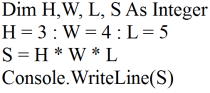
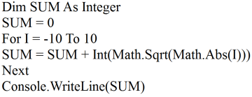
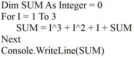
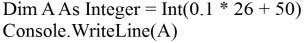
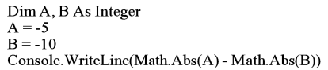

第 13 頁
11. (2) 下列Visaul Basic.NET 程式，其執行結果為何？ ①ORNI ②RNIN ③NING
④ING！ 。
12. (4) 在Visual Basic 語言中，若 X="ABCDE" ，則下列何者正確？ ①Left(X,2)=
Mid(X,2,4) ②Right(X,2)=Mid(X,2,4) ③Left(X,2)=Mid(X,4,2) ④Right(X,2)=
Mid(X,4,2) 。
13. (2) 下列Visaul Basic.NET 程式，其執行結果為何？ ①ABC ②AAA ③ABB ④A
AE 。
14. (1) 下列Visaul Basic.NET 程式，其執行結果為何？ ①ABCDEA ②ABCDEE ③
ABCDEABCDE ④ABCDEEDCBA 。
15. (2) 下列Visaul Basic.NET 程式片段，執行後結果顯示為何？ ①P4.5 ②111 ③N
ES111 ④JON 。
16. (1) 在Visaul Basic.NET 語言中，下列何者為Console.WriteLine(Chr(48))的執行
結果？ ①0 ②1 ③48 ④49 。
17. (4) 下列Visaul Basic.NET 程式，其執行結果為何？ ①234 ②4567 ③567 ④456
。
18. (1) 下列Visaul Basic.NET 程式，其執行結果為何？ ①COMP ②UTER ③COMP
UTER ④COMPUT 。
19. (2) 下列Visaul Basic.NET 程式，其執行結果為何？ ①"97 " ②"7 4" ③"748"
④" 48" 。
Page 13 of 41
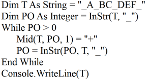
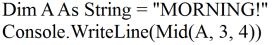
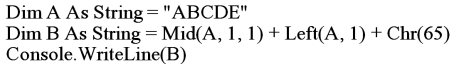
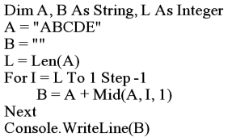
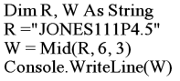
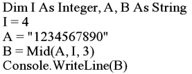
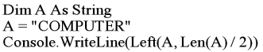

第 14 頁
20. (2) 下列Visaul Basic.NET 程式，其執行結果為何？ ①"2D" ②23 ③"23" ④123
。
21. (2) 下列C 程式，其執行結果為何？ ①8 ②9 ③10 ④11 。
22. (1) 在C 程式中，假設字串 A="123", 字串 B="4567"，則strlen(strcpy(B, A))之
值為何？ ①3 ②4 ③4567 ④123 。
23. (3) 下列運算何者可處理兩個字串變數，而無法處理兩個數字變數？ ①大小比
較 ②相等比較 ③直接連鎖(Concatenation)合成 ④邏輯運算 。
24. (3) 在Visual Basic.NET 語言中，若字串變數A="ABCDEF"，字串變數B="WX
YZ"，則Mid(A,3,2)+Mid(B,2,2)之結果為？ ①ABCWX ②DEFYZ ③CDXY
④DEYZ 。
25. (2) 下列Visaul Basic.NET 程式，其執行結果為何？ ①COMAL ②PETER ③RS
ONALPUTER ④TERPE 。
26. (3) 在Visaul Basic.NET 語言中，若TEL 檔案已有2 筆記錄，則下面程式執行
後，TEL 檔案會有幾筆記錄？ ①1 筆 ②2 筆 ③3 筆 ④4 筆 。
27. (1) 在Visaul Basic.NET 語言中，下述程式片段之用途為何？ ①循序檔建檔 ②
循序檔新增資料 ③隨機檔建檔 ④隨機檔新增資料 。
28. (1) 在Visaul Basic.NET 程式中讀取已開啟之循序檔資料，須用那一個函數測試
檔案中資料已被讀完？ ①EOF( ) ②LOF( ) ③LOC( ) ④FREE( ) 。
29. (4) 對於下列Visaul Basic.NET 程式片段，何者敘述有誤？ ①共執行9 次 ②列
印順序為 -1, -0.5, 0, 0.5, 1, 1.5, 2, 2.5, 3 ③STEP 為0.5 ④當A=1，B=1 時，
迴圈執行一次 。
Page 14 of 41
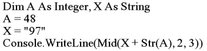
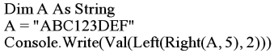
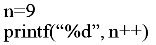
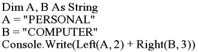
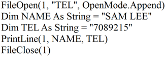
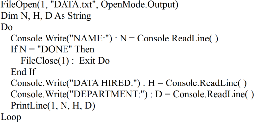

第 15 頁
30. (1) 現有 Visual Basic.NET 程式如下，請問針對各行之說明何者是錯誤的？ ①
第1 行：開啟一新檔案，名稱為DEMO，作為輸入檔 ②第4 行：由鍵盤輸
入資料 ③第6 行：檢查輸入之資料是否為0，以決定是否停止資料輸入 ④
第7 行：將輸入之資料寫入檔案1 內 。
31. (2) 在Visual Basic.Net 中，若Dim SUM As Integer = 2*3'5 ，則Console.Write
Line(SUM) 執行結果為何？ ①1 ②6 ③7 ④70 。
32. (4) 欲將一檔案COPY 到另一個檔案，下列那一項操作不需執行？ ①開啟檔案
②關閉檔案 ③檔案讀寫 ④檔案內容搜尋 。
33. (1) 下列Visaul Basic.NET 程式，其執行結果為何？ ①25 ②30 ③55 ④110 。
34. (4) 在Visaul Basic.NET 語言中，要在現有循序資料檔之後加入一筆新記錄，則
開啟資料檔時，應指定其為那一類型的處理方式？ ①Input ②Output ③Upd
ate ④Append 。
35. (4) 下列何者不是Visual Basic.Net 語言中的變數型態？ ①Single ②Char ③Inte
ger ④Bool 。
36. (1) 下列Visaul Basic.NET 程式片段中，下列何者為其輸出結果及 SWAP A(I),
A(J) 之次數？ ①2 4 5 6 9，6 次 ②9 6 5 4 2，7 次 ③2 4 5 6 9，7 次 ④9 6
5 4 2，6 次 。
37. (3) 下列Visaul Basic.NET 程式，其執行結果為何？ ①8 ②9 ③10 ④11 。
Page 15 of 41
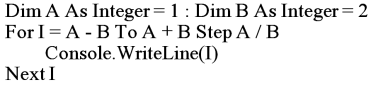
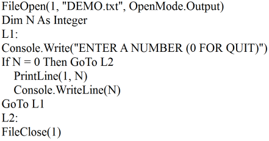
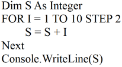
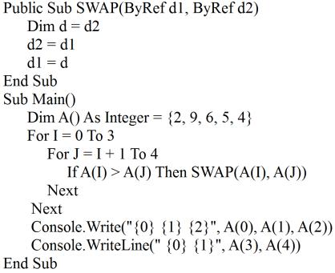
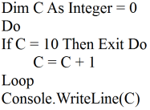

第 16 頁
38. (3) 下列Visaul Basic.NET 程式，其執行結果為何？ ①9 ②10 ③11 ④12 。
39. (3) 下列Visaul Basic.NET 程式，其執行結果為何？ ①40 ②45 ③55 ④60 。
40. (4) 下列Visaul Basic.NET 程式，其執行結果為何？ ①5 5 0 ②4 2 4 ③2 4 4 ④
4 4 2 。
41. (3) 在Visual Basic.NET 中，Boolean 變數型態的預設值為何？ ①True ②1 ③F
alse ④0 。
42. (4) 下列何者非Visual Basic.NET 語言檔案處理函式？ ①FilePut ②FileOpen ③
FileClose ④FileRead 。
43. (3) 下列Visaul Basic.NET 程式片段執行完畢後，試問 A(2)之值為何？ ①2 ②5
③8 ④9 。
44. (2) 下列Visaul Basic.NET 程式片段為一排序程式，若S 陣列中之元素個數為1
0 個(N=10)，則下列程式之比較動作共作了幾次？ ①10 ②45 ③55 ④100 。
45. (3) 下為一使用虛擬碼(Pseudo Code)所撰寫之程式，當N 值為何時，程式會有
Page 16 of 41
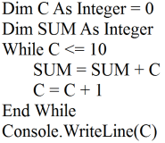
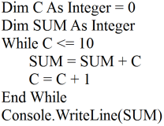
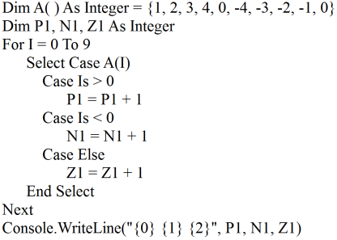
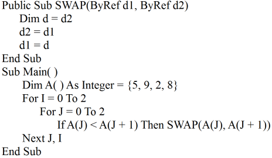
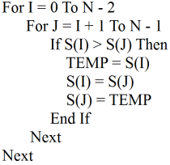

第 17 頁
問題？ ①N＞0 ②N=0 ③N＜0 ④N＞=0 。
46. (4) 下列Visaul Basic.NET 程式執行結束後，BEEP 指令共執行了幾次？ ①0 ②
3 ③6 ④9 。
47. (2) 下列何者非Visaul Basic.NET 語言迴圈控制指令？ ①For...Next ②Switch...
Case ③Do While...Loop ④Do Until...Loop 。
48. (2) 下列Visual Basic.NET 程式執行時會發生何種錯誤？ ①OUT OF DATA IN
LINE 3 ②INDEX OUT OF RANGE IN LINE 3 ③OUT OF MEMORY IN LIN
E 3 ④SYNTAX ERROR IN LINE 3 。
49. (4) 若欲計算X,Y,Z 的總和，並把值指定給T，請問在Visual Basic.NET 語言程
式中，Dim T As Integer =X-Y-Z 犯了何種錯誤？ ①文法錯誤 ②變數宣告錯
誤 ③編譯錯誤 ④邏輯錯誤 。
50. (1) 下列 Visaul Basic.NET 程式片段，若執行時 A=2 ，則其執行結果為何？ ①
A ②B ③C ④ABC 。
51. (4) 下列Visaul Basic.NET 程式中，宣告Dim A(2,3)，陣列A 共有多少個元素(E
lements)？ ①2 ②3 ③6 ④12 。
52. (3) 以輾轉相除法求a, b 兩正整數之最大公因數，下列程式片段（1）與（2）應
該填入什麼內容？ ①（1） b Mod a,（2）c=0 ②（1） a Mod b,（2） c＜0
③（1） a Mod b, （2） c＜＞0 ④（1） b Mod a,（2） c＞0 。
53. (1) 下列Visaul Basic.NET 程式，其執行結果為何？ ①185 ②195 ③325 ④365 。
Page 17 of 41
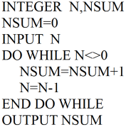
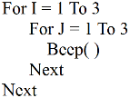
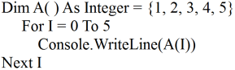
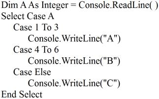
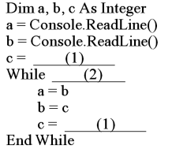

第 18 頁
54. (3) 下列Visaul Basic.NET 程式，其執行結果為何？ ①130 ②146 ③156 ④306 。
55. (4) 下列Visaul Basic.NET 程式，其執行結果為何？ ①8 ②10 ③12 ④14 。
56. (1) 下列Visaul Basic.NET 程式，其執行結果為何？ ①52 ②58 ③110 ④120 。
57. (4) 下列Visaul Basic.NET 程式，宣告陣列DIM A(5) As Single 共有多少位元(B
ytes)？ ①10 ②12 ③20 ④24 。
58. (2) 下列Visaul Basic.NET 程式，其印出內容為何？ ①數列之總和 ②數列之平
均 ③各數之值 ④各數之差 。
59. (4) 下列Visaul Basic.NET 程式，其執行結果為何？ ①3 ②6 ③8 ④9 。
60. (4) 下列Visaul Basic.NET 程式，其執行結果為何？ ①14 ②15 ③20 ④21 。
61. (3) 下列Visaul Basic.NET 程式，其執行結果為何？ ①4, 0 ②6, 0 ③0, -7 ④0,
-4 。
Page 18 of 41
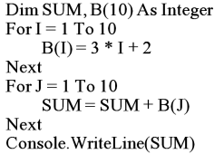
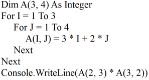
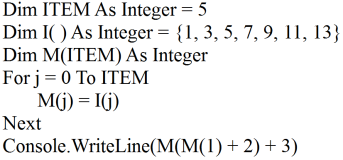
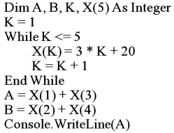
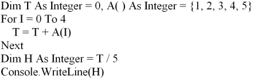
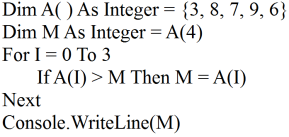
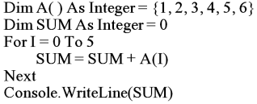

第 19 頁
62. (4) 在Visaul Basic.NET 程式中， Dim A (5, 3)共有多少個元素？ ①8 ②10 ③1
5 ④24 。
63. (1) 下列Visaul Basic.NET 程式，其執行結果為何？ ①10 ②20 ③30 ④40 。
64. (4) 下列Visaul Basic.NET 程式執行後，A(1, 3)之值與何者相同？ ①A(2, 1) ②
A(2, 2) ③A(2, 3) ④A(3, 1) 。
65. (1) 下列Visaul Basic.NET 程式，其執行結果為何？ ①0 ②1 ③10 ④24 。
66. (1) 下列Visaul Basic.NET 程式，其執行結果為何？ ①45 ②50 ③55 ④65 。
67. (4) 下列Visaul Basic.NET 程式，其執行結果為何？ ①55 ②45 ③1 ④0 。
68. (3) 下列Visaul Basic.NET 程式，其執行結果為何？ ①45 ②50 ③55 ④60 。
69. (3) 下列Visaul Basic.NET 語言程式，其執行結果為何？ ①45 ②50 ③55 ④60 。
Page 19 of 41
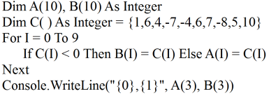
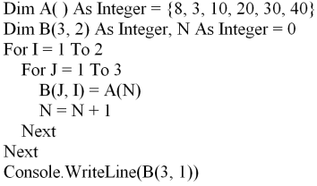
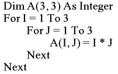
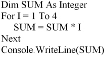
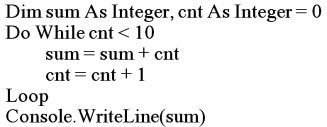
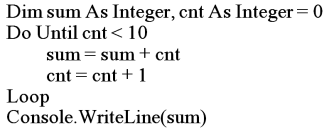
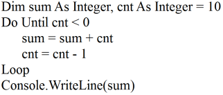
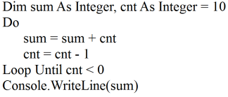

第 20 頁
70. (1) 下列Visaul Basic.NET 程式，其執行結果為何？ ①45 ②50 ③55 ④65 。
71. (4) 下列Visaul Basic.NET 程式，其執行結果為何？ ①55 ②45 ③1 ④0 。
72. (3) 下列Visaul Basic.NET 程式，其執行結果為何？ ①32 ②16 ③0 ④-16 。
73. (1) 下列Visaul Basic.NET 程式，其執行結果為何？ ①32 ②30 ③0 ④-32 。
74. (3) 下列Visaul Basic.NET 程式，其執行結果為何？ ①5 ②10 ③15 ④20 。
75. (3) 下列Visaul Basic.NET 程式，其執行結果為何？ ①78 ②116 ③153 ④168 。
76. (1) 在Visaul Basic.NET 語言中，對WHILE...WEND 之敘述，下列何者有誤？
①若條件不成立時，則重複執行某些敘述 ②每次執行前，即判定條件 ③可
能執行無限多次 ④可能執行0 次 。
77. (4) 下列Visaul Basic.NET 程式，其執行結果為何？ ①25 ②55 ③100 ④120 。
78. (3) 下列何者為Visaul Basic.NET 語言之迴圈指令？ ①If...Then ②Goto ③For...
Next ④Dim 。
79. (2) 下列Visaul Basic.NET 程式，其執行結果為何？ ①2 ②3 ③4 ④6 。
Page 20 of 41
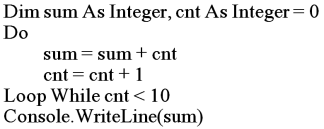
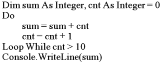

第 21 頁
80. (3) Visual Basic.NET 語言程式中，何者不能在終端機中印出換行符號？ ①Con
sole.WriteLine( ) ②Console.Write(vbNewLine) ③Console.Write(\n) ④Conso
le.Write(vbCrLf) 。
81. (1) 下列流程圖所對應的Visaul Basic.NET 指令為何？ ①Do ...Loop While ②W
hile...Wend ③Goto ④If...Then...Else 。
82. (4) 下列流程圖所對應的Visaul Basic.NET 指令為何？ ①While...Wend ②Goto
③For...Next ④If...Then...Else... 。
83. (3) 下列流程圖所對應的Visaul Basic.NET 指令為何？ ①If...Then...Else... ②Fo
r...Next Do...Loop ③While...Wend ④Goto 。
84. (3) 下列流程圖所對應的Visaul Basic.NET 指令為何？ ①Do...While ②Do...Loo
p ③Do...Loop Until ④Case 。
85. (1) 下列流程圖所對應的Visaul Basic.NET 語言為何？
①
②
Page 21 of 41
第 22 頁
③
④
。
86. (4) 在視覺化程式語言(如Visual Basic.NET)中，若欲存取某一筆資料庫資料，
不會使用下列何種設定？ ①RecordSet ②DatabaseName ③RecordSource ④
DataType 。
87. (4) 在視覺化程式語言(如Visual Basic.NET)中，下列何種設定無法指定表單(Fo
rm1)背景顏色？ ①Form1.BackColor=&H0000ffff& ②Form1.BackColor=QB
Color(2) ③Form1.BackColor=RGB(250, 255, 0) ④From1.BackColor=BGCol
or(5) 。
88. (3) 在視覺化程式語言中(如Visual Basic.NET)，下列程式為計算1 加到n 的總
和，則空格 ①中應填入下列何者？(1)(n-1)+summation(n) ②n+summation(n)
③n+summation(n-1) ④(n-1)+summation(n+1) 。
89. (4) 在視覺化程式語言(如Visual Basic.NET)中，所設計之視窗程式，其視窗標
題由下列那個屬性所控制？ ①Text ②Label ③Display ④Caption 。
90. (1) 在視覺化程式語言(如Visual Basic.NET)中，下列何種圖形檔案格式無法處
理？ ①eps ②bmp ③ico ④jpg 。
91. (3) 在視覺化程式語言(如Visual Basic.NET)中，下列何種設定或屬性與表單大
小及座標值無關？ ①Left ②Right ③Enable ④ScaleMode 。
92. (2) 在視覺化程式語言(如Visual Basic.NET)中，下列何者非滑鼠相關事件？ ①
Click ②KeyPress ③DragOver ④MouseMove 。
93. (2) 在視覺化程式語言(如Visual Basic.NET)中，若欲避免表單視窗被遮蓋後留
下空白區時，則應設定下列何種屬性？ ①Appearance=1 ②AutoRedraw=Tru
e ③ClipControls=True ④ControlBox=True 。
94. (3) 在視覺化程式語言(如Visual Basic.NET)中，若欲得知使用者是否按下F1
鍵，則應設計下列那個事件的處理程式？ ①MouseDown ②Click ③KeyDow
n ④KeyPress 。
95. (1) 下列Visual Basic.NET 程式，若Text2 為一文字物件，當程式執行完畢時，
下列何者正確？ ①當c 為0 時，則b 為質數 ②當c 為0 時，則b 為偶數
③當c 為1 時，則b 為質數 ④當c 為1 時，則b 為偶數 。
Page 22 of 41

第 23 頁
96. (2) 下列Visual Basic.NET 程式的用途為何？ ①將滑鼠指標滑過表單時，印出H
ello World! ②將滑鼠指標在表單上敲擊時，印出Hello World! ③利用鍵盤
將表單拖曳時，印出Hello World! ④利用鍵盤在表單上敲擊時，印出Hello
World! 。
97. (3) 對C 語言的描述，下列何者有誤？ ①兼具高階語言與低階語言之特性 ②執
行速度較一般高階語言快 ③最適合作商業性資料處理之語言 ④所有變數均
需要宣告 。
98. (4) 比較C 與Visaul Basic.NET 語言，下列何者是C 語言特色？ ①陣列 ②副程
式 ③迴圈 ④指標 。
99. (4) 對C 語言變數生命週期的敘述，下列何者正確？ ①靜態變數(Static)的值永
遠不變 ②自動變數(Automatic)的宣告不佔記憶體空間 ③靜態變數在該函數
執行完後即消失 ④自動變數在函數執行時產生，執行後消失 。
100. (3) 下列C 程式，其執行結果為何？ ①X=0 ②X=1 ③X=2 ④X=3 。
101. (2) 在Visaul Basic.NET 語言中，下列何者為 Console.WriteLine(Asc("A"))的結
果？ ①64 ②65 ③66 ④67 。
102. (1) 下列 Visaul Basic.NET 程式，其執行結果為何？ ①5 ②6 ③30 ④40 。
103. (4) 在 Visaul Basic.NET 語言中，若沒有特別宣告，則陣列 Dim X(10, 5) As In
teger 共有幾個元素？ ①10 ②50 ③60 ④66 。
104. (3) 下列 Visaul Basic.NET 程式，其執行結果為何？ ①1 ②10 ③11 ④55 。
105. (2) 下列Visaul Basic.NET 程式，其執行結果為何？ ①8 ②9 ③10 ④11 。
Page 23 of 41
第 24 頁
106. (2) 在Visaul Basic.NET 語言中對於變數的定義，『!』是定義單精度(Single-pr
ecision)，下列何者是定義倍精度(Double-precision)？ ①@ ②# ③$ ④% 。
107. (3) 在Visaul Basic.NET 語言中，若 Dim X As String = "abc"，則 Console.Writ
eLine(UCase(X))的結果為何？ ①abc ②Abc ③ABC ④aBc 。
108. (2) 在Visaul Basic.NET 語言中，若 Dim SUM As Integer = 15 + 3+ 2, 則Cons
ole.WriteLine(SUM)的結果為何? ①18 ②20 ③24 ④47 。
109. (2) 在Visaul Basic.NET 語言中，下列何種類別(Class)有提供取得目前的日期和
時間？ ①Date ②DateAndTime ③Time ④SystemTime 。
110. (3) 在Visaul Basic.NET 語言中，下列何者為Console.WriteLine(Math.Abs(-36))
的結果？ ①6 ②-6 ③36 ④-36 。
111. (3) 下列C 程式，其執行結果為何？ ①1 ②1 1 1 1 ③9 ④9 9 9 9 。
112. (3) 在視覺化程式語言(如Visual Basic.NET)中，欲將表單畫面設為最大，則應
設定那個屬性？ ①MaxButton ②Maximumize ③WindowState ④LargeButto
n 。
113. (1) 在C 語言中，「*」運算符號的用途為何？ ①取得指標(Pointer)變數值及當
成算數乘法的運算符號 ②取得變數位址及當成邏輯AND 的運算符號 ③可
當字串連結運算，亦可做數值資料的加法運算 ④處理緩衝區所餘存的資料
及釋放檔案的通訊區域 。
114. (2) 在C 語言中，「&」運算符號的用途為何？ ①取得指標(Pointer)變數值及當
成算數乘法的運算符號 ②取得變數位址及當成邏輯AND 的運算符號 ③可
當字串連結運算，亦可做數值資料的加法運算 ④處理緩衝區所餘存的資料
及釋放檔案的通訊區域 。
115. (3) 在Visaul Basic.NET 語言中，「+」運算符號用途為何？ ①取得指標(Point
er)變數值及當成算數乘法的運算符號 ②取得變數位址及當成邏輯AND 的運
算符號 ③可當字串連結運算，亦可做數值資料的加法運算 ④處理緩衝區所
餘存的資料及釋放檔案的通訊區域 。
116. (3) 在Visual Basic.NET 語言中，若Dim X As Integer = 4, Y As Integer = 5，
則Console.WriteLine("{1},{0},{0},{2}", X, Y, Y)的結果為何？ ①4,5,5, ②
5,4,5, ③5,4,4,5 ④4,5,5,4 。
117. (4) 下列何者不是Visual Basic.NET 的變數型態？ ①Date ②Object ③UInteger
④Float 。
118. (3) 在Visaul Basic.NET 語言中，若 Dim X As String = "My Test", Y As String
= "Basic"，則 Console.WriteLine(Right(X, 4) + Left(Y, 2))的結果為何？ ①t
estBas ②estBas ③TestBa ④testbas 。
Page 24 of 41


第 25 頁
119. (2) 在Visaul Basic.NET 語言中，對於變數的定義，下列何者為定義長整數(Lon
g Integer)？ ①% ②& ③$ ④# 。
120. (1) 在Visaul Basic.NET 語言中，對於變數的定義，下列何者為定義整數(Intege
r)？ ①% ②& ③$ ④# 。
121. (3) 在Visaul Basic.NET 語言中，對於變數的定義，下列何者為定義字串(Strin
g)？ ①% ②& ③$ ④# 。
122. (2) 在Visaul Basic.NET 語言中，下列何者為用來定義陣列大小的指令？ ①Re
m ②Dim ③Mid ④Swap 。
123. (1) 在Visual Basic.NET 語言中，下列何者為用來註解說明的指令？ ①' ②\ ③#
④\* 。
124. (2) 在Visual Basic.NET 語言中，若想將日期修改成2000 年5 月20 日，下列何
者正確？ ①Dim aDate As Date = 5/20/2000 ②Dim aDate As Date = #5/20/2
000 ③Dim aDate As Date = #2000/5/20 ④Dim aDate As Date = 2000/5/20 。
125. (3) 下列C 程式，其執行結果為何？ ①0 ②1 ③2 ④3 。
126. (2) 在C 語言中，將變數左移一個位元(Bit)用途為何？ ①變數乘以1 ②變數乘
以2 ③變數乘以4 ④變數乘以8 。
127. (3) 在C 語言中，將變數右移二個位元(Bit) 用途為何？ ①變數除以1 ②變數除
以2 ③變數除以4 ④變數除以8 。
128. (3) 在Visual Basic.NET 語言中，Console.WriteLine(19 Mod (6.7)) 的結果為何？
①1.2 ②3.4 ③5.6 ④7.1 。
129. (4) 在Visaul Basic.NET 語言中，Console.WriteLine(InStr("Qbasic", "s"))的結果
為何？ ①1 ②2 ③3 ④4 。
130. (4) 在Visaul Basic.NET 語言中，若 Dim X As Integer = 255，則Console.Write
Line(Hex(X))的結果為何？ ①DD ②EE ③FE ④FF 。
131. (2) 在Visaul Basic.NET 語言中，Console.WriteLine(Fix(12.55))的結果為何？
①10 ②12 ③12.5 ④13 。
132. (4) 在Visaul Basic.NET 語言中，Console.WriteLine(CInt(12.51)) 的結果為何？
①10 ②12 ③12.5 ④13 。
133. (3) 在Visaul Basic.NET 語言中，若Dim X As String = "DB"，則Console.Writ
eLine("*" + LTrim$(RTrim$(X)) + "*")的結果為何？ ①**DB ②*D*B ③*D
B* ④D*B* 。
134. (3) 在Visaul Basic.NET 語言中，Console.WriteLine(Chr(Asc("A")))的結果為
何？ ①65 ②66 ③A ④B 。
135. (3) 在Visaul Basic.NET 語言中，Console.WriteLine(3 / 10 * 3) 的結果為何？
①0 ②0.6 ③0.9 ④10 。
136. (4) 在Visual Basic.NET 語言中， 若Dim X As String = "HI ", Y As String = "
Page 25 of 41

第 26 頁
BASIC", Z As String = X + Y，則Console.WriteLine(X + Y + Z)輸出結果為
何？ ①HI ②BASIC ③HI BSAIC ④HI BASICHI BASIC 。
137. (4) 在Visaul Basic.NET 語言中，若Dim X As String = "MyTest", 則Console.
WriteLine(Right(X, 2)) 的結果為何？ ①MyTest ②My ③Te ④st 。
138. (4) 在Visaul Basic.NET 語言中，Console.WriteLine(Math.Abs(36.44)) 的結果為
何？ ①6 ②6.2 ③36 ④36.44 。
139. (2) 在Visaul Basic.NET 語言中，Console.WriteLine(20 Mod (6))的結果為何？
①1 ②2 ③3 ④4 。
140. (2) 在Visaul Basic.NET 語言中，Console.WriteLine(3 + 4 * 5 - 4)的結果為何？
①15 ②19 ③41 ④49 。
11900 電腦軟體設計 丙級 工作項目03：系統發展
1. (4)
下列何者為結構化分析(Structured Analysis)不常採用的工具？ ①結構圖(St
ructure Charts) ②資料流程圖(Data-Flow Diagrams) ③流程圖(Flow Charts)
④物件圖(Object Diagrams) 。
2. (1)
程式說明文件是用來詳細說明程式之設計方法、處理邏輯與輸出入資料格式
等；在程式說明文件中，下列何者對系統設計師最為重要？ ①程式流程圖
②程式內容 ③螢幕設計及說明 ④程式修改狀況單 。
3. (4)
一個良好的程式規格書中，應包含許多規格之描述，若是某程式之目的是在
於維護資料以供輸入使用，則必須在規格書中包含畫面之欄位說明與控制；
下列何者不包含於畫面之欄位說明與控制之文件中？ ①畫面中各種欄位之
來源或去處之變數名稱與意義 ②各個欄位之檢核條件與限制 ③各個欄位之
編輯型態表現與屬性 ④程式畫面處理之邏輯程序 。
4. (3)
一個好的程式，均會在程式起始位置上置放一標題。在標題註解區中，應包
含何種資訊？A.程式名稱B.設計者C.完成日期、修改日期D.開發時間E.使
用人員F.使用檔案名稱G.內容處理概述H.使用部門 ①A,B,C,E,F,G,H ②A,
B,C,D,F,G ③A,B,C,F,G ④A,B,C,D,E,F,G,H 。
5. (4)
下列何者常用於系統分析時，在資料分析階段用以確認沒有其他事物被忽
略？ ①資料流程圖 ②組織圖 ③甘特圖 ④決策表 。
6. (3)
下列何者非測試計劃之內容？ ①測試規格要求 ②測試資料型態 ③測試對象
選擇 ④測試預期結果 。
7. (3)
下列何者可提供在程式說明書中，程式模組在異動作業時，維持資料的一致
性？ ①資料檔案結構表 ②處理程序與介面描述 ③檔案與程式對應關係 ④
檔案與資料對應關係 。
8. (4)
下列何者對程式說明文件之敘述有誤？ ①具有溝通意見的功能 ②具有品質
管制的功能 ③具有經驗累積、新手學習的功能 ④具有修改程式的功能 。
9. (3)
在程式內每段程式碼加上一些註解，何者為多餘的？ ①此段程式碼資料處
Page 26 of 41

第 27 頁
理的方式 ②此段程式碼的例外情形處理方式 ③整個程式的目的、功能 ④此
段程式碼若用到GOTO 時以結構化方式描述，加強了解程式走向 。
10. (3) 關於註釋(Comments)的說明，以下何者不正確？ ①註釋依其解釋的範圍，
可分為標頭註釋和功能註釋 ②標頭註釋使用在每一個程式單元的最前頭，
用來說明該程式單元的功能 ③註釋的說明數量應該愈多愈好，以提高程式
的可讀性 ④優良的程式碼(Source Code)本身就是最好的說明文件，所以應
取用適當的變數名稱，適當的縮排，使程式具有自我詮釋(Self-Commented)
的效果 。
11. (3) 下列何者對於物件導向建模語言UML 的描述是錯誤的？ ①類別圖 (Class D
iagram)表示系統存在之類別、介面及其靜態資料結構與邏輯關係 ②物件圖
(Object Diagram) 描述系統於某一時間點的靜態結構，也可稱為案例(Instan
ce)圖 ③UML 是一種第四代程式語言，可以透過編譯執行 ④循序圖 (Sequen
ce Diagram) 以時間發生先後順序表達物件間訊息傳遞與處理程序，包含類
別之物件、訊息、操作、生命線與控制焦點等 。
12. (1) 對於程式文件的編寫，下列何者有誤？ ①對於程式的執行效率無所助益，
因此不須浪費時間去編寫 ②好的程式文件可減少程式維護時所花的時間 ③
讓程式文件與應用程式同在，是程式設計人員的職業道德 ④程式文件必須
隨著程式的修改而修改 。
13. (2) 下列何者非功能註釋(Functional Comments)之特性？ ①只描述每一段落的
原始程式，而非逐行註釋 ②逐行註釋 ③註釋採用內縮方式 ④註釋須正確說
明 。
14. (3) 流程圖多用來描述軟體程序，請問方塊、菱形、箭號各在流程圖中代表何種
工作？ ①邏輯狀況、處理步驟、控制流程 ②控制流程、邏輯狀況、處理步
驟 ③處理步驟、邏輯狀況、控制流程 ④處理步驟、控制流程、邏輯狀況 。
15. (4) 當程式設計師完成程式設計後需撰寫程式說明書，下列何者非程式說明書中
之項目？ ①處理邏輯 ②程式維護記錄 ③流程圖 ④原始憑證 。
16. (4) 程式說明書主要對作業程式提供功能性之說明，下列何者非程式說明書中之
項目？ ①描述輸入程式的資料檔 ②描述程式的輸出 ③處理說明 ④使用語
言說明 。
17. (1) 若系統設計師完成軟體之設計後，可以何種方法將設計理念傳達給程式設計
師以撰寫正確的程式？ ①虛擬碼(Pseudo Code) ②系統流程圖 ③使用者手
冊 ④需求文件 。
18. (3) 應用系統開發完成後，必須編寫程式文件，下列何者對程式說明文件之敘述
有誤？ ①方便系統的維護 ②利於系統的移交 ③可以提高系統的價值 ④提
高系統的可讀性 。
19. (4) 下列何者非程式說明書中之項目？ ①程式概要 ②程式規範書 ③原始程式清
單 ④系統概述 。
20. (4) 程式說明書之使用對象為何？ ①系統分析師 ②程式設計師 ③電腦操作員
④系統設計及維護人員 。
21. (1) 下列何項不適於列在系統使用手冊中？ ①系統效益評估 ②系統的主要功能
Page 27 of 41

第 28 頁
③線上輸入作業程序 ④異常狀態的處理程序 。
22. (1) 下列何者不是系統整合測試的目的？ ①測試系統的美觀性 ②測試系統的穩
定性 ③測試系統能否正常運作 ④測試系統是否有缺失 。
23. (3) 根據軟體工程理論，軟體測試過程有四個步驟，其順序為何？ ①單元測試、
整合測試、驗收測試、系統測試 ②整合測試、系統測試、單元測試、驗收
測試 ③單元測試、整合測試、系統測試、驗收測試 ④整合測試、單元測試、
驗收測試、系統測試 。
24. (2) 系統使用手冊應如何充分描述該系統所具有的功能及基本使用方法？ ①儘
量使用電腦專用術語 ②使用一般文詞 ③使用程式流程圖 ④使用程式語言 。
25. (4) 下列何者不屬於系統發展及功能描述的說明文件？ ①操作手冊 ②設計文件
③維護手冊 ④程式撰寫要訣 。
26. (4) 下列何者不屬於系統使用手冊的目的？ ①當要做系統修改時的參考 ②方便
了解系統及使用系統 ③系統與使用者之間的橋樑 ④藉由手冊，使用者自行
修改系統，毋需向原程式設計者溝通 。
27. (3) 下列何者不是造成軟體危機原因？ ①軟體複雜度太高 ②使用者需求很混淆
③電腦價格太高 ④缺乏一套專案管理的方法 。
28. (3) 下列何者非系統使用手冊之內容？ ①說明如何使用程式或軟體 ②說明錯誤
訊息及其意義 ③說明程式之設計邏輯 ④說明解決疑難之指引 。
29. (1) 下列何者非系統使用手冊該具備的基本要件？ ①附有完整的原始程式，讓
使用者能對系統的使用更熟稔 ②操作程序敘述分明，使用者易於閱讀操作
③在資料維護的操作方面，對於應注意的事項，使用手冊應詳細記載 ④附
有系統整體的功能結構圖，讓使用者易於瞭解系統功能間的關係 。
30. (2) 下列何者不是制定軟體生命週期的原因？ ①便於管理 ②節省經費 ③便於權
責的劃分 ④建立標準，形成一套可遵循的程序 。
31. (4) 對測試工作的敘述，下列何者錯誤？ ①執行一個程式去找尋程式中錯誤的
過程是測試工作的一種 ②良好的測試，可以提昇程式的可信度 ③良好的測
試資料具有高度發現錯誤的可能性 ④沒有發現錯誤的測試就是成功的測試
。
32. (1) 對資料檔的存取方式，下列何者為依序從媒體中將資料一筆接一筆的存取？
①循序存取檔(SAM) ②直接存取檔(DAM) ③索引循序檔(ISAM) ④虛擬記
憶體存取檔(VSAM) 。
33. (4) 下列何者不是系統整合測試之目的？ ①資料在經過不同模組介面時可能會
消失 ②個別模組時，可忍受之不精確，合併後可能會放大至不能接受地步
③全面性資料結構可能發生問題 ④某個模組內功能的邏輯控制有誤，對其
他模組一定會有不良影響 。
34. (1) 程式設計師在完成部分程式後即可予以測試，其使用方法為下列何者？ ①
程式中加入虛擬段落 ②未完成部分優先跳過 ③避免執行未完成部分 ④使用
現成程式取代之 。
35. (1) 下列何者不屬於資料流程圖的內容？ ①事務流 ②資料流 ③資料儲存 ④處
Page 28 of 41

第 29 頁
理程序 。
36. (4) 下列何者不能有效協助程式在測試階段的除錯工作？ ①採用結構化程式設
計 ②按流程圖追蹤程式邏輯 ③減少複雜的邏輯判斷式 ④減少使用副程式及
函數呼叫 。
37. (3) 關於系統整合測試的方式，下列何者不正確？ ①可分為由上而下和由下而
上兩種方式 ②由上而下測試方法的最大缺點是必須設計一個虛擬模組(Stub
-Module) ③由下而上測試方法是一種漸增式的軟體結構組合法，沿著控制階
層結構(Condition Hierarchy)，從主程式開始，以深度優先(Depth-First)或廣
度優先(Breadth-First)的方式往下整合 ④整合測試時，可採用由上而下及由
下而上混合式的整合方式 。
38. (2) 在軟體系統的測試階段中，下列工作之順序應以何者為先？ ①實施系統測
試 ②實施單元測試 ③實施功能模組之間的整合測試 ④實施驗收測試 。
39. (1) 系統整合測試發現錯誤時，不宜做下列何種處理？ ①將所有程式全部刪除
②依據結果，研判錯誤發生之成因及所在 ③查閱相關手冊，確定發生錯誤
之原因 ④使用偵錯程式，協助追蹤錯誤之所在 。
40. (1) 下列何者不是資訊需求分析的方法？ ①軟體測試 ②詢問使用者 ③由現行資
訊系統中導出 ④綜合使用系統之特性導出 。
41. (3) 測試程式時難免會有錯誤的結果，程式設計師必須藉由下列何者來與測試程
式交互進行？ ①遞迴 ②流程圖 ③除錯 ④編譯 。
42. (1) 在軟體發展過程中，下列程序何者是用以發掘隱藏於程式中且尚未顯露之錯
誤？ ①測試 ②除錯 ③維護 ④設計 。
43. (1) 下列何者為由上而下整合測試(Top-Down Integration Testing)的最大缺點？
①需要有虛擬副程式，造成一些測試上的困難 ②無法進行模組測試 ③驅動
程式設計困難 ④要到最後一個模組整合進來，才可看到軟體的完整功能 。
44. (1) 系統整合測試中，需進行數量測試(Volume Testing)，藉由此項測試，往往
可以發現一些較少發生的錯誤，而數量測試所使用的資料量，以何者為佳？
①大量的真實資料 ②小量的真實資料 ③適中的真實資料 ④資料量不影響
測試結果，可以隨心所欲 。
45. (2) 軟體系統的測試是應用系統開發過程中，不可省略的一環。關於系統測試的
方式，下列敘述何者不正確？ ①先由每位程式設計師分別對自己所撰寫的
部分，進行單元測試(Unit Testing) ②由一人專責軟體系統的測試工作，免
得因多頭馬車，徒增程式設計師的困擾 ③軟體系統的測試工作除了程式設
計師必須參與外，亦應由數個不同的使用者做使用前的測試，以增加系統的
穩定性 ④系統測試應以真實的資料進行，以增進其適用性 。
46. (2) 下列何者不是軟體系統發展分析與設計工具？ ①流程圖 ②網路分佈圖 ③結
構圖 ④決策表 。
47. (3) 「系統使用手冊」中不包含下列何者？ ①系統功能 ②輸入畫面 ③檔案結構
④所需設備 。
48. (4) 關於系統使用手冊，下列何者錯誤？ ①內容應說明系統的功能及作業方式
Page 29 of 41

第 30 頁
②封面應填列系統名稱、代號與製作人姓名 ③目錄應列出說明書各項目及
其頁次 ④解釋各個程式的內容 。
49. (4) 那一類的說明書中必須將原始憑證的傳送及登錄方法詳細說明？ ①系統說
明書 ②程式說明書 ③操作說明書 ④使用者說明書 。
50. (1) 下列何者不是物件導向分析工具使用案例模型(Use Case Model)的元素？ ①
類別式(Class) ②使用案例(Use Case) ③主角(Actor) ④擴充關聯(Extend Rel
ation) 。
51. (2) 下列何者不是系統分析師或程式設計師所製作的系統使用手冊中的內容？
①系統概述 ②程式維護記錄 ③使用手冊目錄 ④程式操作須知 。
52. (4) 製作系統使用手冊時，下列何者有誤？ ①文字宜簡單，少用抽象及專門之
名詞 ②由整體到細部，由系統特點至一般功能 ③提醒避免常犯之錯誤 ④撰
寫應具有專業眼光以及專家導向使手冊具有深度 。
53. (3) 下列何者不是軟體設計可能使用的原則？ ①設計高內聚力(High Cohesion)
模組 ②使用封裝 (Encapsulation)技術隱藏模組內的細部設計 ③設計模組之
間具有高耦合力(High Coupling) ④使用抽象化 (Abstraction)抽取重要的系
統特徵 。
54. (4) 下列何者不是資料庫管理師(Database Administrator, DBA)的職責？ ①決定
資料庫的架構與資訊內容 ②決定儲存結構和存取策略 ③使用權的檢驗和核
准程序 ④開發前端應用程式 。
55. (4) 在系統分析階段，最主要的工作內容是資料蒐集與資料分析，下列敘述中那
一項較不適合做為資料蒐集的方式？ ①使用單位相關報告、報表及程序手
冊等書面資料 ②與使用單位充份溝通的面談方式 ③抽樣式的蒐集數量、成
本、時間及其他相關資料 ④依程式設計師的經驗分析 。
56. (4) 在軟體發展生命週期中，區分為許多階段，下列何者非軟體發展生命週期中
之階段？ ①分析(Analysis) ②程式撰寫(Coding) ③維護(Maintenance) ④查
核(Review) 。
57. (3) 在系統開發的規劃階段中，對未來系統應如何進行開發，設定一些規則，下
列何者非規劃階段中應建立者？ ①時程 ②人力需求 ③演算法 ④應開發之
範圍 。
58. (3) 在軟體的發展過程中，那兩個階段的人員不宜重覆？ ①評估與設計 ②設計
與系統實做 ③系統實做與品質保証 ④測試與支援 。
59. (2) 下列何種分析圖是用來說明系統的資料關係？ ①資料流程圖(Data Flow Dia
gram, DFD) ②實體-關係圖(Entity-Relationship Diagram, ERD) ③類別圖(Cl
ass Diagram) ④流程圖(Flow Chart) 。
60. (4) 對於整合測試之敘述，下列何者「不正確」？ ①在單元測試後執行 ②策略
上可由上而下(Top-Down)或由下而上(Bottom-Up) ③目的是測試各模組之整
合上是否有問題 ④由客戶來執行 。
61. (4) 下列何者不屬於使用者重視的軟體品質特性（非功能性需求）？ ①可用性
②效率 ③易用性 ④資料庫存取 。
Page 30 of 41

第 31 頁
62. (4) 在分別對各個模組個別測試完畢後，便須進行所謂的整合測試，下列何者為
最常用的作法？ ①自上而下測試法及由左而右之測試法 ②自下而上測試法
及由右而左之測試法 ③自上而下及自下而上混合測試法 ④自上而下測試
法、自下而上測試法及混合測試法 。
63. (3) 整合測試的執行程序可區分為兩種：一為非遞增式，針對各模組單獨測試
後，再將其各模組合成加以測試；另一為遞增式，先測試單獨模組，然後逐
一增加測試模組。有關遞增式測試程序之優點，下列何者為非？ ①可以節
省測試工作時間 ②可以提早測試出模組介面之程式錯誤 ③可以提前讓使用
人員參與 ④可以方便偵錯工作之展開 。
64. (3) 下列何者是一個軟體從某作業環境移到其他作業環境，所需耗費的工時及金
錢等所做的評估？ ①可測試性評估 ②可靠性評估 ③可攜性評估 ④效率評
估 。
65. (1) 程式設計人員要能正確掌握程式發展的進度，對於所要發展的程式應採取下
列何種設計方式？ ①由上而下 ②由下而上 ③由外而內 ④由內而外 。
66. (3) 程式的撰寫和除錯在軟體發展生命週期中是屬於下列那一時期的工作內
容？ ①系統分析 ②系統設計 ③系統製作 ④交付使用 。
67. (3) 下列何者不是使用軟體雛型(Prototype)的目的？ ①釐清並使需求完整，當成
「需求工具」 ②探索其他設計途徑，當成「設計工具」 ③設計資料庫結構
與流程圖，當成「分析工具」 ④逐漸成形定案產品，當成「建構工具」 。
68. (3) 下列何者為資料流程圖 (Data Flow Diagram) 之用途？ ①系統設計 ②程式
撰寫 ③系統分析 ④撰寫測試報告 。
69. (2) 下列那一個軟體發展階段完成後，可產生功能規格？ ①系統設計 ②系統分
析 ③程式撰寫 ④使用手冊撰寫 。
70. (2) 下列何者是在整個軟體發展過程中的先後順序？A.軟體設計B.系統分析C.
程式撰寫D.軟體測試E.維護 ①A,B,C,D,E ②B,A,C,D,E ③A,B,C,E,D ④B,A,
C,E,D 。
71. (3) 軟體發展生命週期(Software Development Life Cycle, SDLC)的過程，約可分
為五個階段，其順序下列何者正確？ ①系統規劃→系統建置→系統分析→
系統發展→系統設計 ②系統規劃→系統發展→系統建置→系統分析→系統
設計 ③系統規劃→系統分析→系統設計→系統發展→系統建置 ④系統規劃
→系統分析→系統發展→系統設計→系統建置 。
72. (2) 有關「軟體發展生命週期(Software Development Life Cycle, SDLC)」之敘
述，下列何者不正確？ ①將系統的發展過程劃分為依序進行的幾個階段，
並依照階層化的觀念，訂出各階段的工作項目 ②每一個階段被視為一獨立
之工作單位，與其他階段不相關 ③階段的劃分有一定的模式 ④用來控制軟
體系統的發展，可以降低軟體危機所面臨問題的嚴重性 。
73. (1) 在軟體發展生命週期(Software Development Life Cycle, SDLC)中，可行性研
究是下列那一個階段所完成的工作？ ①規劃 ②分析 ③實體設計 ④製作 。
74. (2) 下列何者不屬於「軟體危機」(Software Crisis)所涵蓋的問題？ ①軟體產品
和使用者需求不符 ②缺乏軟體公司 ③軟體品質的好壞甚難判定 ④軟體維護
Page 31 of 41

第 32 頁
工作極為困難 。
75. (1) 對於整合測試之敘述，下列何者錯誤？ ①必須在整個系統發展完成後才開
始測試 ②當懷疑系統有錯誤時，可以在工作環境直接測試，而不影響實際
資料的正確性 ③系統可以遞增方式測試，逐步由一個模組擴增至整個系統
④由上而下的整合測試缺點為低層模組的錯誤會較晚發現 。
76. (4) 系統測試過程中，下列何者不屬於系統發展測試？ ①個別程式測試 ②程式
整合測試 ③系統驗收測試 ④專案計畫測試 。
77. (3) 系統發展專案中，負責在預定的專案範圍、有限的時間、預算與人力資源間，
取得平衡是下列何者的職責？ ①程式設計師 ②系統分析師 ③專案經理 ④
網路管理師 。
78. (1) 系統使用文件至少應包括下列那些資料？ ①操作者指引(Operator's Guide)
與使用者指引(User's Guide) ②硬體維護(Hardware Maintenance)與軟體維護
(Software Maintenance) ③系統分析(System Analysis)與系統設計(System De
sign) ④資料庫結構(Database Structure)與評估報告(Evaluation Report) 。
79. (3) 下列何者不屬於程式說明的文件？ ①程式流程圖 ②螢幕設計及說明 ③各項
商業規則代碼及編號方法說明 ④報表格式及說明 。
80. (3) 下列何者不是軟體需求獲取的方法？ ①開會研討 ②問卷調查 ③物件設計
④面談 。
81. (4) 下列何者不是需求驗證的目的？ ①確定軟體需求規格正確說明系統的行為
和特色 ②確定已從系統需求或其他來源中正確地導出軟體需求 ③確認需求
適於進行產品設計、建構與測試工作 ④確認專案的收費金額 。
82. (4) 下列何者不是軟體系統的步驟？ ①系統分析 ②系統設計 ③系統建置 ④系
統收費 。
83. (1) 下列何者不是使用資料庫的好處？ ①節省專案開發經費 ②確保資料的獨立
性 ③讓多數的使用者、程式間能夠共享資料 ④資料的統一管理 。
84. (3) 軟體發展生命週期(Software Development Life Cycle, SDLC)中，下列何者不
屬於程式測試的範圍？ ①單元測試 ②整合測試 ③完成I/O 設計 ④程式除錯
。
85. (3) 軟體發展過程中，有關資料庫的定義與設計是下列何者的職掌？ ①系統分
析師 ②程式設計師 ③資料庫管理師 ④軟體使用部門主管 。
86. (2) 在軟體發展生命週期的各階段中，下列何者決定軟體之需求規格？ ①可行
性評估 ②使用者軟體需求分析 ③實體系統設計 ④系統建置與維護 。
87. (1) 下列何者為系統分析之主要目的？ ①研究系統的需求及研訂可行方案 ②依
步驟上線實施 ③評量實施成效 ④發展程式軟體 。
88. (4) 下列何者不是軟體生命週期中發展階段的步驟？ ①根據軟體需求設計一套
模組 ②考慮每一個模組內部的執行程序 ③根據模組來撰寫程式及測試 ④根
據模組來做維護 。
89. (3) 在軟體發展生命週期中，將規劃層面產生的需求規格轉變為實際之軟體是屬
於那一階段？ ①啟蒙階段 ②規劃階段 ③發展階段 ④維護階段 。
Page 32 of 41

第 33 頁
90. (2) 下列何者是連結伺服端的資料庫系統與用戶端應用程式間的軟體？ ①測試
軟體(Testing Software) ②中介軟體(Middleware) ③公用程式(Utility) ④建
構管理軟體(Configuration Management Software) 。
91. (3) 軟體發展生命週期之主要步驟有：1.可行性研究2.系統設計3.系統分析4.
系統實施5.系統維護6.系統測試，請按先後順序排出 ①1,2,3,4,5,6 ②1,3,2,
4,5,6 ③1,3,2,4,6,5 ④1,2,3,5,6,4 。
92. (4) 在可行性研究時，下列何者不需考慮？ ①事實是什麼？ ②使用者的需要是
什麼？ ③解決問題需要做什麼？ ④解決問題的詳細步驟 。
93. (3) 關於瀑布式軟體發展的生命週期(Software Development Life Cycle, SDLC)
的敘述，下列何者錯誤？ ①SDLC 意指軟體系統的開發階段與過程 ②系統
發展須有明確之階段 ③前一階段未完成，可視情況許可，先進行下一階段
工作 ④某一階段必須有產品來顯示已告一段落 。
94. (4) 關於結構化程式設計的觀念，下列何者不是其優點？ ①是一種由上而下的
設計方法 ②將程式分解成多數個具有獨立功能的模組 ③每個模組功能單元
自成一段程式 ④不需要做整合測試的一種程式設計方法 。
95. (3) 下列何者是軟體發展生命週期中首要的優先步驟？ ①系統測試 ②系統分析
③可行性研究 ④程式製作 。
96. (4) 下列何者為軟體發展的生命週期中耗費時間最長的階段？ ①系統分析 ②程
式製作 ③系統測試 ④系統維護 。
97. (3) 對於軟體發展生命週期(Software Development Life Cycle, SDLC)之觀念，下
列何者不正確？ ①是軟體工程的一個概念，用來描述軟體的生命 ②軟體發
展生命週期各階段的劃分，並非一成不變的 ③軟體的生命週期由使用者決
定 ④每一階段完成之後必須進行檢討並且完成各種文件 。
98. (1) 軟體雛型法是一種軟體開發方法，初期先建立一可以使用之動態模型，讓使
用者反覆使用，再逐漸調整以符合使用者需求，進而成為一個成功的產品。
有關軟體雛型法下列敘述何者正確？ ①幫助使用者了解系統並提出完整的
需求 ②因其過程繁複，必然導致軟體開發與維護成本提高 ③因為使用者之
參與，軟體預算易被刪減 ④常導至使用者需求，無限制地增加 。
99. (3) 在軟體發展生命週期最後之維護階段通常費時最久，成本也最高，其形成原
因相當多，下列何者並非其中之一？ ①分析時未全盤了解使用者需求 ②軟
體文件(如程式說明書)不全 ③維護人員偷懶 ④程式設計不夠結構化 。
100. (2) 軟體專家提出軟體工程理論與軟體發展方法是為了解決下列那一個問題？
①軟體計價問題 ②軟體危機 ③軟體智慧財產權問題 ④軟體行銷問題 。
101. (4) 下列何者不是軟體需求分析階段的工作？ ①需求取得 ②分析 ③訂定規格
④系統維護 。
102. (2) 對於軟體發展生命週期(Software Development Life Cycle, SDLC)的敘述，下
列何者為正確？ ①驗證階段是屬於第二階段 ②需求分析階段應最先處理 ③
第一步驟是系統測試 ④最後一個步驟是程式撰寫 。
103. (3) 對於軟體發展生命週期(Software Development Life Cycle, SDLC)的敘述，下
Page 33 of 41
第 34 頁
列何者為正確？ ①程式設計所佔的時間最長 ②需求的取得最容易 ③最後步
驟是系統維護 ④訂定規格的時間最短 。
104. (3) 對於軟體發展生命週期(Software Development Life Cycle, SDLC)的敘述，下
列何者為正確？ ①目的是作為測試程式的利器 ②可行性研究工作項目應在
系統建置階段完成 ③設計階段分成初步設計及細部設計兩階段 ④驗證階段
是要釐清使用者的需求 。
105. (1) 對於軟體發展生命週期(Software Development Life Cycle, SDLC)的敘述，下
列何者為正確？ ①整個軟體的生命將於該軟體被廢棄不用時才結束 ②程式
撰寫完成其生命週期才結束 ③軟體初步設計開始為軟體生命週期的開始 ④
軟體建置完成時為結束 。
106. (4) 下列何者為軟體發展生命週期(Software Development Life Cycle, SDLC)階
段中，必須考量購買套裝軟體或委外開發等選擇方案供客戶選擇？ ①系統
建置階段 ②初步設計階段 ③系統驗證階段 ④需求分析階段 。
107. (4) 在軟體發展生命週期(Software Development Life Cycle, SDLC)中，下列何者
不是系統建置(System Installation)階段的工作？ ①教育訓練 ②準備系統設
備 ③轉換資料檔案 ④證明系統完全無誤 。
108. (2) 在軟體發展生命週期(Software Development Life Cycle, SDLC)中，下列何者
不是系統建置(System Installation) 階段的工作？ ①安全稽核 ②訂定清楚的
規格 ③系統運作評估 ④系統維護 。
109. (4) 系統發展過程的敘述，下列何者正確？ ①必須先完成系統設計，才開始對
此系統進行分析 ②必須驗證所有使用者需求無誤，才能進行系統設計 ③初
步設計必須設計資料結構與演算法則 ④程式撰寫必須對系統進行驗證 。
110. (1) 資訊系統發展過程中，業務知識所佔比率較資訊技術為重的是那一個階段？
①需求取得階段 ②系統設計階段 ③系統建置階段 ④系統維護階段 。
111. (1) 要使軟體專案的開發與需求同步，必須執行以下那一個活動？ ①需求規格
標示更新版本的記錄 ②要求使用者參與系統測試 ③程式加上註解 ④多人共
同開發 。
112. (1) 有關系統設計與發展，下列何者敘述正確？ ①使用者的參與，是系統發展
成功的重要因素之一 ②系統設計的項目中，不包含硬體架構配置設計 ③軟
體開發時發生設計錯誤，為了達成預定進度，不要回頭修正 ④系統開發務
求正確，可以慢慢設計，不需要理會預定的進度 。
113. (1) 有關系統發展的敘述，下列何者正確？ ①系統規劃無法從單一角度瞭解全
盤需求，需要合併文字與圖形來表達 ②為節省專案開發的時間，在規劃需
求時，編撰詞彙及定義應用程式開發領域使用的特殊術語是多餘的工作 ③
需求的變更不需經過可行性的探討，可任意進行設計或採用 ④流程圖(Flow
chart)是結構化分析(Structured Analysis)最常採用的工具 。
114. (2) 物件導向技術採用的統一流程方法(Unified Process)，不包含以下那一個階
段？ ①初始(Inception)階段 ②規劃(Planning)階段 ③建構(Construction)階
段 ④移交(Transition)階段 。
115. (1) 系統設計時應劃分不同子系統(Subsystems)，下列何者正確？ ①子系統之間
Page 34 of 41

第 35 頁
的相關性愈小愈好 ②子系統之間不能有相關性 ③子系統之間相關性越大越
好 ④子系統內部相關性越小越好 。
116. (3) 關於目前軟體發展的趨勢，下列何者錯誤？ ①朝向元件化發展 ②朝向多層
式(Multi-Tier)的架構 ③朝向緊密式關連 ④朝向網際網路系統 。
117. (4) 有關繪製流程圖(Flow Chart)的敘述，下列何者錯誤？ ①對各項工作應明確
定義 ②開始與結束工作必須明確界定 ③每一步驟皆須排序，依次執行 ④是
需求規格訂定不可或缺的工具 。
118. (4) 有關繪製流程圖(Flow Chart)的敘述，下列何者錯誤？ ①流程圖上至少有一
個邏輯上的終點 ②流程圖上判斷符號，例如IF 指令敘述至少有兩條向外的
流線 ③終止符號不能有向外的流線 ④平行處理的符號是雙向箭頭 。
119. (4) 下列何者不是製作資料流程圖(Data Flow Diagram, DFD)的目的？ ①定義系
統資料傳遞的過程 ②描述系統操作需具備的資料 ③定義與外界流通的資料
④定義外部系統發生過程的處理 。
120. (4) 有關結構化程式設計的敘述，下列何者錯誤？ ①可以增進程式的易讀性 ②
可以增進程式的易維護性 ③最好使用結構化分析(Structured Analysis)技術
④可以節省程式撰寫的時間一半以上 。
121. (3) 下列何者不屬於資訊系統開發中設計階段的工作？ ①繪製流程圖(Flow Cha
rt) ②撰寫演算法虛擬碼(Pseudo Code) ③訪談使用者 ④報表格式設計 。
122. (3) 有關軟體雛型(Prototype)的敘述，下列何者正確？ ①雛型是一個完全不能執
行的電腦系統模組 ②若系統開發時建構軟體雛型，可以省略書面軟體需求
規格的撰寫 ③建構軟體雛型是降低客戶對系統不滿意，及早瞭解使用者的
回應的好辦法 ④建構軟體雛型會提高失敗的風險 。
123. (2) 下列何者不是系統分析師之主要工作？ ①找出並確認使用者需求 ②軟體系
統演算法則評估 ③軟體系統之規劃與設計 ④擔任使用者與系統相關人員間
之溝通角色 。
124. (4) 下列何者不是物件導向(Object-oriented)技術的特性？ ①抽像化(Abstractio
n) ②繼承(Inheritance) ③封裝(Encapsulation) ④分割(Decomposition) 。
125. (4) 以物件導向技術設計一個類別(Class)時，其內容不包含下列何者？ ①類別
名稱(Name) ②類別屬性(Attributes) ③類別方法(Methods) ④類別註解(Com
ment) 。
126. (2) 以物件導向技術設計資訊系統的類別(Class)圖，可以描述系統的那一個部
分？ ①硬體配置關係 ②系統元件間的靜態關係 ③系統動態行為與演算法
④外部系統的功能 。
127. (2) 以物件導向技術設計一個類別(Class)B 繼承類別A，則B 可以繼承類別A 的
那一個部分？ ①名稱(Name) ②方法(Methods)或功能 ③註解(Comment ) ④
角色(Role) 。
128. (1) 下列何者為程式撰寫正確的原則？ ①結構化程式應避免使用GOTO 指令 ②
用組合語言撰寫程式時，多使用記憶體存取指令，而不使用存取暫存器的指
令，可提昇程式執行效率 ③程式撰寫時應採用系統提供的特殊函數，以增
Page 35 of 41

第 36 頁
進程式執行的效能 ④程式註解對程式執行不會發生任何影響，應盡量不使
用 。
129. (4) 有關程式設計規格的撰寫，下列何者錯誤？ ①遞迴(Recursive)之使用會增加
程式除錯之困難 ②需要滿足系統分析規格 ③可以作為單元測試的依據 ④實
體關係圖(Entity-Relation Diagram)是一個很常使用的工具 。
130. (4) 開發人員所重視的軟體品質特性，不包括下列何者？ ①可維護性 ②可攜性
③可再用性 ④可分析性 。
131. (3) 下列何者為由下而上的系統整合測試(System Bottom-Up Integration Testin
g)的最大缺點？ ①難以找到個別模組缺點 ②延後許多下層模組真實的測試
③要到最後一個模組整合進來，才可看到軟體的完整功能 ④增加開發殘根(S
tub)模組的成本 。
132. (3) 下列何者為整合測試之主要目的？ ①確認系統功能是否合乎使用者的需求
②確認系統的可靠度 ③確認模組間介面一致性問題，測試軟體整體功能 ④
通過使用者驗收 。
133. (2) 下列何者為進行整合測試前需先完成的測試？ ①系統測試 ②單元測試 ③壓
力測試 ④灰箱測試 。
134. (4) 下列何者應執行驗收測試？ ①系統設計者 ②系統分析者 ③程式撰寫者 ④
系統使用者 。
135. (1) 對於系統測試的敘述，下列何者正確？ ①完成系統測試後，仍無法保證該
系統在執行時百分之百正確 ②系統測試可以找出系統分析師的所有系統分
析錯誤 ③系統測試可以完全找出程式撰寫時產生的錯誤 ④系統測試目的在
找出軟體模組之間介面溝通的錯誤 。
136. (4) 在軟體測試中，通常先進行系統測試，測試機器硬體可否配合後，再進行以
下那一種測試？ ①整合測試 ②單元測試 ③白箱測試 ④驗收測試 。
137. (2) 有關軟體測試的敘述，下列何者正確？ ①商用套裝程式已經過發行者進行
軟體測試，所以使用者不必再予以測試 ②通常模組測試完成後，才會進行
整合測試 ③在軟體系統開發測試時，程式設計師必須負責完成整個測試工
作，包括單元測試及系統測試 ④在軟體發展生命週期中，若時間不夠，可
以省略測試工作 。
138. (3) 有關軟體測試的敘述，下列何者錯誤？ ①製作程式時，為使程式順利執行，
程式在未執行前，可利用桌上檢查(Desk Check)先行除錯 ②製作程式時，若
程式執行有誤時，可將適當變數內的值列印出來，以便除錯 ③軟體測試發
現的錯誤已交由開發者修正，不需要再重新予以測試 ④製作程式時，可利
用一些系統提供的程式軟體，加速除錯的進行 。
139. (2) 下列何者為軟體壓力測試？ ①單元測試 ②系統測試 ③整合測試 ④白箱測
試 。
140. (1) 軟體測試中，測試對使用者個數的容忍程度屬於下列何種測試？ ①壓力測
試 ②相容性測試 ③整合測試 ④驗收測試 。
Page 36 of 41

第 37 頁
11900 電腦軟體設計 丙級 工作項目04：資訊安全
1. (2)
為確保資料輸入的正確性，在何種情況下需採用驗證運作(Validation Run)？
①單筆資料輸入作業 ②整批自動資料輸入作業 ③新增資料作業 ④編修資
料作業 。
2. (1)
人工檢查資料輸入是否正確，是屬於下列何種安全管理？ ①資料安全 ②程
式安全 ③行政安全 ④通訊安全 。
3. (4)
下列何種措施不屬於系統安全的範圍？ ①隱藏檔 ②使用者密碼 ③限制存取
權 ④開放輸入／輸出裝置的存取 。
4. (4)
一般電腦系統在確保系統之安全前提下可採用一些方法，下列何者非最常用
之方法？ ①設定密碼(Password) ②設定存取權限(Access Right) ③將硬體設
備地點予以管制進出 ④限定使用時間 。
5. (2)
資訊系統的安全與管理，除了嚴密控制使用者的權限，經由密碼設限等方式
外，下列何者為最積極的例行工作？ ①經常變更密碼 ②定期備份 ③監控系
統使用人員 ④硬體設鎖，避免有心人破壞 。
6. (4)
在電腦作業中，下列敘述何者非維護作業安全的主要工作？ ①維持電腦的
正常作業 ②維護設備的安全 ③保護資料的安全 ④軟硬體都應投保 。
7. (4)
下列何者不是資訊系統安全之措施？ ①識別(Identification) ②備份(Backu
p) ③稽核(Audit) ④單元測試(Unit Testing) 。
8. (1)
有關電腦安全防護的措施中，下列何者為同時針對 "實體" 及 "資料" 的防護
措施？ ①不斷電系統 ②人員定期輪調 ③保留日誌檔 ④管制上機次數與時
間 。
9. (3)
為有效防制電腦犯罪，事前之預防與事後之懲處，應雙管齊下，在預防措施
上其首要步驟為何？ ①建立同業公會組織 ②建立電腦系統之稽核措施 ③建
立電腦系統內部之安全措施 ④建立電腦犯罪人員檔案系統 。
10. (2) 在資料傳遞時，為避免資料被竊取或外洩，通常採用下列何種保護措施？
①將資料壓縮 ②將資料加密 ③將資料解密 ④將資料解壓縮 。
11. (3) 在系統安全防護作業中，下列何種管理規劃較不妥當？ ①安排系統管理者
接受訓練 ②規劃安全稽核系統 ③規定密碼取用方式限定為有意義名詞 ④引
進防毒軟體 。
12. (4) 有關資訊安全的威脅一般區分為四類，下列何者非屬上述的類型？ ①天然
災害 ②機件故障 ③故意破壞 ④使用者心理恐懼 。
13. (1) 為了維護資料的安全，下列敘述何者不正確？ ①為避免增加管理人員的困
擾，系統密碼一旦設定便不宜任意變更 ②系統資料必須定時予以備份 ③備
份資料應與系統設備及應用系統分開放置 ④應用系統必須設置專責人員，
並設置使用日誌詳細記錄使用情形 。
14. (3) 完善的資訊安全系統，應在使用者、資料、作業系統和電腦來源中設立足夠
的關卡，以防止使用者透過程式去存取不是他自己的資料，下列何者屬上述
的概念？ ①識別(Identification) ②獨立性(Isolation) ③資料存取控制(Acces
s Control) ④監視性(Surveillance) 。
Page 37 of 41

第 38 頁
15. (4) 在資訊安全系統的架構中，下列何者是屬於偵測性質？ ①獨立性(Isolation)
②資料存取控制(Access Control) ③識別(Identification) ④監視性(Surveillan
ce) 。
16. (2) 在這瞬息萬變，電腦病毒種類日益更新的時代中，為避免電腦病毒災害的發
生，與其過分依賴一些市售防毒程式，倒不如反求諸己，來做好保全防毒之
道，下列防毒觀念中，何者為非？ ①平常應養成將資料備份的習慣 ②重要
之硬碟由於經常需要讀寫，所以不必設定存取控制機制 ③儘量不要使用非
法軟體，尊重智慧財產權，支持合法軟體 ④時時注意電腦之運作情形是否
有異常之現象 。
17. (3) 下列何者為在開機過程中佈下陷阱，暗中傳染的病毒？ ①磁碟機病毒 ②記
憶體病毒 ③系統型病毒 ④檔案型病毒 。
18. (4) 下列何者為正確的電腦病毒預防的觀念？ ①為了資源共享，應該讓大家一
起來使用電腦 ②只要有了防毒程式，就可以高枕無憂，不怕中了電腦病毒
③電腦病毒只會破壞軟體，不會破壞硬體 ④電腦病毒不但會破壞軟體，也
會破壞硬體 。
19. (4) 下列何者不是電腦病毒的特性？ ①電腦病毒會寄生在正常程式中，俟機將
自己複製並感染給其它正常程式 ②當正常程式被電腦病毒感染時，並不一
定會立即發作，有時須條件成立時，才會發病 ③有些電腦病毒發作時會降
低中央處理單元(CPU)的執行速度 ④電腦病毒一定病發且病發後就一定無
法解毒 。
20. (1) 關於電腦病毒的敘述下列何者「不正確」？ ①電腦病毒可以透過空氣來傳
播 ②電腦病毒為一種可直接或間接執行的檔案 ③電腦病毒通常為一種任意
檔名的程式 ④避免使用來路不明的磁片，以減少電腦病毒感染的機會 。
21. (4) 關於電腦病毒的敘述下列何者「不正確」？ ①它會使程式不能執行 ②它會
破壞硬碟的資料 ③它具有自我複製的能力 ④電腦感染電腦病毒後會立刻發
作 。
22. (3) 下列何者不屬於防毒軟體的設計方式？ ①掃描式的防毒軟體 ②檢查碼式的
防毒軟體 ③抽查式的防毒軟體 ④推測病毒行為模式的防毒軟體 。
23. (3) 關於電腦病毒的敘述下列何者「不正確」？ ①電腦病毒是一種程式 ②電腦
病毒可依附在正常程式間隨著擴散出去 ③電腦病毒是一種病菌 ④電腦病毒
可不斷複製 。
24. (4) 網路病毒是一種能利用網路為媒介，達到其傳染目的的電腦病毒。為了防治
網路病毒，在系統管理與使用上，下列何者為非？ ①明訂使用電腦的程序
及規則 ②不允許使用者自行安裝軟體 ③使用各種軟體或系統提供的工具來
加強安全防護 ④請使用者自行製作網路開機片 。
25. (1) 關於網路安全的觀念，下列何者為非？ ①避免資料不易取得 ②確保資料的
正確與完整 ③避免資料被竊取 ④確保使用者能信任網路系統 。
26. (2) 電腦病毒漸漸已是損毀資訊系統的主要因素之一，所以病毒的防治已是電腦
從業人員所不能忽視，下列那一項不是防治病毒的方法？ ①在電腦中安裝
掃毒的程式，經常檢測 ②時常用清潔磁片清洗磁碟機 ③避免使用來路不明
Page 38 of 41

第 39 頁
的軟體 ④不需寫入資料的磁片，最好調成防寫狀態 。
27. (3) 硬體防毒產品可防止何種電腦病毒的感染？ ①非常駐型檔案型病毒 ②常駐
型檔案型病毒 ③開機型病毒 ④混合型病毒 。
28. (1) 正確之防毒概念應以什麼為先？ ①防毒 ②偵毒 ③解毒 ④掃毒 。
29. (2) 當系統資料庫因硬碟損壞而損毀，下列何者為回復的正確步驟？ ①修復或
更換硬碟→回存(Restore)原資料庫完整備份→利用Physical Log 做資料回復
(Physical Log 又稱BeforeImage) ②修復或更換硬碟→回存(Restore)原資料
庫完整備份→利用Logical Log 做資料回復 ③修復或更換硬碟→利用 Physi
cal Log 做資料回復→回存(Restore)原資料庫完整備份 ④修復或更換硬碟→
利用 Logical Log 做資料回復→回存(Restore)原資料庫完整備份 。
30. (1) 電腦系統在意外災害回復管理體系中(Recovery Management Systems)，對使
用者來說，下列何者所受之衝擊最大？ ①Site Down ②Network Down ③Ap
plication Down ④System Down 。
31. (4) 下列何者對資訊系統災害復原計劃(Disaster Recovery Plan)敘述有誤？ ①復
原計劃必需時時加以演習，使參與作業人員熟練復原處理作業，以爭取時效
②對於備份的復原資料應妥為保存 ③應尋找後備支援之電腦中心，並與其
訂立支援合約，以為應變支援之需 ④復原計劃必需評估其所花費之成本，
如果企業能容忍風險，只要事前將復原計劃教育所有作業人員，使其心生警
愓，就可不必做實地演習，以節省成本 。
32. (2) 電腦系統發生應用程式失效(Application Down)時，下列之影響何者正確？
①所有使用者會受影響 ②部份使用者會受影響 ③沒有任何使用者受影響 ④
整個系統會發生當機現象 。
33. (1) 電腦病毒也有生命週期，一般言之，可分為四個階段，而當病毒活化(Activ
e)後，取得系統之控制權，選擇尚未被感染之磁碟或檔案，並將此病毒結構
複製一份，加入被感染者程式碼中，使其成為病毒的帶原者，潛伏在新被感
染之磁碟或檔案中，準備取得機會活化，此現象是下列那一階段之描述？
①感染期 ②潛伏期 ③活化期 ④破壞期 。
34. (3) 美國電腦病毒防治協會將所有電腦病毒分成四類，當使用者用已中了電腦病
毒的磁片開機時，啟動磁區的程式因為已遭病毒修改，會把病毒程式先載入
記憶體，使病毒活化(Active)，開始發揮作用，此種病毒應屬下列那一類病
毒？ ①程式檔感染者(Program Infector) ②作業系統感染者(System Infector)
③啟動磁區感染者(Boot Sector Infector) ④混合型感染者(Mixed Infector) 。
35. (4) 由於主從(Client/Server)分工觀念之引進，資訊安全的威脅日漸嚴重，如要
徹底實施安全措施，需要做系統、程式、資料及實體安全之整合，一般而言，
電腦安全的威脅最嚴重的是來自何處？ ①電腦病毒之感染 ②自然災變之發
生（如水災、火災或地震等） ③間諜人員或有心人士之破壞 ④作業人員之
疏忽、錯誤或不誠實 。
36. (3) 下列何者為當開啟/讀取電子郵件時，會自動將帶有病毒之郵件自動轉寄給
通訊錄中的連絡人？ ①啟動磁區型病毒 ②磁片開機型病毒 ③電子郵件病毒
④混合型病毒 。
Page 39 of 41
第 40 頁
37. (3) 檔案感染型病毒會附著於下列何種檔案上？ ①XXX.TXT ②XXX.BAT ③X
XX.EXE ④XXX.SYS 。
38. (4) 有關電腦病毒之敘述，下列何者正確？ ①電腦病毒是會傳染給人類的病毒
②電腦病毒較只會於大型電腦間流行 ③對於已經感染電腦病毒之磁片， 將
所有檔案全部刪除後即可安全 ④開機型電腦病毒經常隱藏於磁片的啟動磁
區部位 。
39. (1) 對於防範電腦犯罪的措施中，何者不正確？ ①避免採用開放系統架構 ②加
強門禁管制 ③資料檔案加密 ④明確劃分使用者權限 。
40. (2) 硬式磁碟機為防資料流失或中毒，應常定期作下列何種工作？ ①查檔 ②備
份 ③規格化 ④用清潔片清洗 。
41. (3) 為避免文字檔案被任何人讀出，可進行加密(Encryption)的動作。在加密時
一般是給予該檔案何種資訊？ ①存檔的空間 ②個人所有權 ③KEY ④USER
ID 。
42. (4) 下列何者為確保電腦電源穩定的裝置？ ①保護設備 ②網路系統 ③空調系統
④不斷電系統 。
43. (3) 下列何者為UPS 的主要功能？ ①消除靜電 ②傳送資料 ③防止電源中斷 ④
備份資料 。
44. (2) 下列何者是網路安全中密碼設定之原則？ ①寫下你的密碼 ②密碼中最好包
含字母及非字母字元 ③用你名字或帳號當作密碼 ④用你個人的資料當作密
碼 。
45. (4) 有關資訊安全的性質，下列何者正確？ ①既不是技術問題，也不是管理問
題 ②純屬技術問題，無關管理 ③純屬管理問題，無關技術問題 ④不但是技
術問題，且是管理問題 。
46. (2) 有關資訊安全的性質，下列何者屬於惡意破壞？ ①人為怠慢 ②擅改資料內
容 ③系統軟體有誤 ④系統操作錯誤 。
47. (2) 下列何者是錯誤的「保護資料」措施？ ①機密檔案由專人保管 ②資料檔案
與備份檔案保存在同磁碟機 ③定期備份資料庫 ④留下重要資料的使用記錄
。
48. (2) 有關電腦犯罪之預防，下列何者正確？ ①資料備份 ②建立資訊安全管制系
統 ③維修電腦 ④和警局連線 。
49. (4) 下列何種類型的資訊安全威脅最難預防？ ①人為疏失 ②機械故障 ③天然災
害 ④蓄意破壞 。
50. (3) 對於軟體系統安全措施，下列何者不適宜？ ①設置密碼 ②專人管理 ③可隨
時讓磁片進出 ④操作手冊、說明文件保存完整 。
51. (4) 網頁應用程式設計中，通常將使用者相關的資料存放在Cookie 中進行應
用，而Cookie 的資料是存放在以下那一個主機？ ①應用程式執行主機 ②網
頁應用程式網站伺服器主機 ③資料庫伺服器主機 ④客戶端瀏覽器主機 。
52. (4) 重要資料在網路上傳輸可能會發生網路干擾或斷線而發生錯誤，為了避免重
送資料造成的延遲，可以使用以下那一種技術？ ①資料打亂(Scrambling)
Page 40 of 41

第 41 頁
②資料壓縮(Compression) ③資料交錯(Interleaving) ④資料糾錯編碼(Error
Correction Coding) 。
53. (1) 若無線網路WiFi 使用開放系統認證(Open System Authentication, OSA)方
法，其存取點(Access Point)用來對每個無線網路使用者裝置的認證碼名稱，
是以下那一個？ ①服務設定識別碼(Service Set Identifier, SSID) ②分碼多
工存取(Code Division Multiple Access, CDMA) ③網際網路控制訊息協定(I
nternet Control Message Protocol, ICMP) ④動態主機設定協定(Dynamic Hos
t Configuration Protocol, DHCP) 。
54. (4) 對於資訊安全的應用中，以下何者沒有使用公開金鑰密碼機制? ①使用SSH
協定遠端登入主機 ②自然人憑證 IC 卡認證 ③瀏覽器使用 HTTPS 通訊協定
④金融卡提款驗證 。
55. (3) 下列何者為利用分散式阻斷服務攻擊程式將數以萬計植入木馬的電腦，組成
一組控制節點發送偽造或垃圾封包，造成被攻擊的伺服器主機癱瘓而無法提
供服務？ ①病毒網路 ②木馬網路 ③殭屍網路 ④蠕蟲網路 。
56. (2) 下列何種網路安全技術使用瀏覽器連接開頭為 https:// 的網址？ ①防火牆
②SSL(Secure Socket Layer) ③SET(Secured Electronic Transaction) ④數位
簽章 。
Page 41 of 41